Showing athletes from Show All Athletes
COPY.labels.msg_loading [no key column in sheet]
Archery
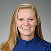
Mackenzie Brown
- Individual
- First-time Olympian
- Birthdate: March 14, 1995
- Birthplace: Tyler, Texas
- Hometown: Flint, Texas
- School: Homeschooled (Tyler, Texas) '13
Brady Ellison
- Individual, Team
- Returning Olympian (medalist)
- Birthdate: Oct. 27, 1988
- Birthplace: Globe, Ariz.
- Hometown: Globe, Ariz.
- School: Mountain Ridge High School (Glendale, Ariz) '07
Zach Garrett
- Individual, Team
- First-time Olympian
- Birthdate: April 8, 1995
- Birthplace: Chula Vista, Calif.
- Hometown: Wellington, Mo.
- School: Wellington-Napoleon High School (Wellington, Mo.) '13
Jake Kaminski
- Individual, Team
- Returning Olympian (medalist)
- Birthdate: Aug. 11, 1988
- Birthplace: Buffalo, N.Y.
- Hometown: Gainesville, Fla.
- School: Iroquois High School (Elma, N.Y.) '06
Badminton
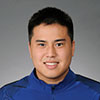
Phillip Chew
- Doubles
- First-time Olympian
- Birthdate: May 16, 1994
- Birthplace: Anaheim, Calif.
- Hometown: Orange, Calif.
- School: University of California, Irvine '19 - Business Economics
Eva Lee
- Doubles
- Returning Olympian
- Birthdate: Aug. 7, 1986
- Birthplace: Hong Kong
- Hometown: Diamond Bar, Calif.
- School: University of California, Irvine '13 - Biological Sciences
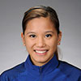
Paula Lynn Obanana
- Doubles
- First-time Olympian
- Birthdate: March 19, 1985
- Birthplace: Dumaguete City, Philippines
- Hometown: Minneapolis/St. Paul
- School: La Salle University, Taft (Manila, Philippines) '06 - Mass Media
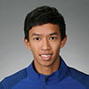
Sattawat Pongnairat
- Doubles
- First-time Olympian
- Birthdate: May 8, 1990
- Birthplace: New York
- Hometown: Orange, Calif.
- School: Taweethapisek High School (Bangkok, Thailand)
Howard Shu
- Singles
- First-time Olympian
- Birthdate: Nov. 28, 1990
- Birthplace: Los Alamitos, Calif.
- Hometown: Los Angeles
- School: UCLA '13 - Business Economics
Jamie Subandhi
- Mixed Doubles
- First-time Olympian
- Birthdate: Dec. 15, 1989
- Birthplace: Long Beach, Calif.
- Hometown: Westminster, Calif.
- School: UCLA '11 - Physiological Science

Iris Wang
- Singles
- First-time Olympian
- Birthdate: Sept. 2, 1994
- Birthplace: Pasadena, Calif.
- Hometown: Arcadia, Calif.
- School: UCLA '19 - Business Economics
Basketball
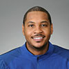
Carmelo Anthony
- Forward
- Returning Olympian (medalist)
- Birthdate: May 29, 1984
- Birthplace: New York
- Hometown: New York
- School: Syracuse University
Seimone Augustus
- Guard/Forward
- Returning Olympian (medalist)
- Birthdate: April 30, 1984
- Birthplace: Baton Rouge, La.
- Hometown: Baton Rouge, La.
- School: Louisiana State University '05
Sue Bird
- Guard
- Returning Olympian (medalist)
- Birthdate: Oct. 16, 1980
- Birthplace: New York
- Hometown: Syosset, N.Y.
- School: University of Connecticut '02
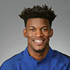
Jimmy Butler
- Guard
- First-time Olympian
- Birthdate: Sept. 14, 1989
- Birthplace: Houston
- Hometown: Houston
- School: Marquette University
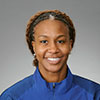
Tamika Catchings
- Forward
- Returning Olympian (medalist)
- Birthdate: July 21, 1979
- Birthplace: Stratford, N.J.
- Hometown: Indianapolis
- School: University of Tennessee '01
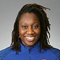
Tina Charles
- Center
- Returning Olympian (medalist)
- Birthdate: Dec. 5, 1988
- Birthplace: Flushing, N.Y.
- Hometown: Queens, N.Y.
- School: University of Connecticut '10
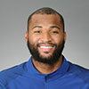
DeMarcus Cousins
- Center
- First-time Olympian
- Birthdate: Aug. 13, 1990
- Birthplace: Mobile, Ala.
- Hometown: Mobile, Ala.
- School: University of Kentucky
Elena Delle Donne
- Guard/Forward
- First-time Olympian
- Birthdate: Sept. 5, 1989
- Birthplace: Wilmington, Del.
- Hometown: Wilmington, Del.
- School: University of Delaware '13
DeMar DeRozan
- Guard
- First-time Olympian
- Birthdate: Aug. 7, 1989
- Birthplace: Bellflower, Calif.
- Hometown: Compton, Calif.
- School: University of Southern California
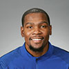
Kevin Durant
- Guard
- Returning Olympian (medalist)
- Birthdate: Sept. 29, 1988
- Birthplace: Washington, D.C.
- Hometown: Washington, D.C.
- School: University of Texas
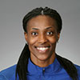
Sylvia Fowles
- Center
- Returning Olympian (medalist)
- Birthdate: Oct. 6, 1985
- Birthplace: Miami
- Hometown: Miami
- School: Louisiana State University '08
Paul George
- Guard
- First-time Olympian
- Birthdate: May 2, 1990
- Birthplace: Palmdale, Calif.
- Hometown: Palmdale, Calif.
- School: Fresno State University
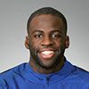
Draymond Green
- Forward
- First-time Olympian
- Birthdate: March 4, 1990
- Birthplace: Saginaw, Mich.
- Hometown: Saginaw, Mich.
- School: Michigan State University
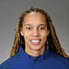
Brittney Griner
- Center
- First-time Olympian
- Birthdate: Oct. 18, 1990
- Birthplace: Houston
- Hometown: Houston
- School: Baylor University '13
Kyrie Irving
- Guard
- First-time Olympian
- Birthdate: March 23, 1992
- Birthplace: Kew, Australia
- Hometown: West Orange, N.J.
- School: Duke University
DeAndre Jordan
- Center
- First-time Olympian
- Birthdate: July 21, 1988
- Birthplace: Houston
- Hometown: Houston
- School: Texas A&M University
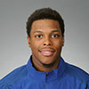
Kyle Lowry
- Guard
- First-time Olympian
- Birthdate: March 25, 1986
- Birthplace: Philadelphia
- Hometown: Philadelphia
- School: Villanova University
Angel McCoughtry
- Guard/Forward
- Returning Olympian (medalist)
- Birthdate: Sept. 10, 1986
- Birthplace: Baltimore
- Hometown: Baltimore
- School: University of Louisville '09
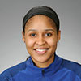
Maya Moore
- Forward
- Returning Olympian (medalist)
- Birthdate: Sept. 10, 1986
- Birthplace: Cole County, Mo.
- Hometown: Atlanta
- School: University of Connecticut '11
Breanna Stewart
- Forward/Center
- First-time Olympian
- Birthdate: Aug. 27, 1994
- Birthplace: Syracuse, N.Y.
- Hometown: North Syracuse, N.Y.
- School: University of Connecticut '16
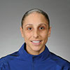
Diana Taurasi
- Guard
- Returning Olympian (medalist)
- Birthdate: June 11, 1982
- Birthplace: Glendale, Calif.
- Hometown: Chino, Calif.
- School: University of Connecticut '04
Klay Thompson
- Guard
- First-time Olympian
- Birthdate: Feb. 8, 1990
- Birthplace: Los Angeles
- Hometown: Los Angeles
- School: Washington State University
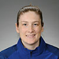
Lindsay Whalen
- Guard
- Returning Olympian (medalist)
- Birthdate: May 9, 1982
- Birthplace: Hutchinson, Minn.
- Hometown: Hutchinson, Minn.
- School: University of Minnesota
Beach Volleyball
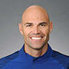
Phil Dalhausser
- Returning Olympian (medalist)
- Birthdate: Jan. 26, 1980
- Birthplace: Baden, Switzerland
- Hometown: Ormond Beach, Fla.
- School: Univerity of Central Florida - Business Administration
Lauren Fendrick
- First-time Olympian
- Birthdate: March 20, 1982
- Birthplace: San Diego
- Hometown: Carlsbad, Calif.
- School: UCLA; University of Southern California
Jake Gibb
- Returning Olympian
- Birthdate: Feb. 6, 1976
- Birthplace: Bountiful, Utah
- Hometown: Bountiful, Utah
- School: University of Utah '02 - Business
Nick Lucena
- First-time Olympian
- Birthdate: Sept. 22, 1979
- Birthplace: Davie, Fla.
- Hometown: Cooper City, Fla.
- School: Florida State University - Sport Management
Casey Patterson
- First-time Olympian
- Birthdate: April 20, 1980
- Birthplace: Van Nuys, Calif.
- Hometown: Newbury Park, Calif.
- School: Brigham Young University
April Ross
- Returning Olympian (medalist)
- Birthdate: June 20, 1982
- Birthplace: Costa Mesa, Calif.
- Hometown: Costa Mesa, Calif.
- School: University of Southern California
Brooke Sweat
- First-time Olympian
- Birthdate: March 27, 1986
- Birthplace: Fort Myers, Fla.
- Hometown: Estero, Fla.
- School: Florida Gulf Coast University
Kerri Walsh Jennings
- Returning Olympian (medalist)
- Birthdate: Aug. 15, 1978
- Birthplace: Santa Clara, Calif.
- Hometown: Saratoga, Calif.
- School: Stanford University
Boxing
Carlos Balderas
- Lightweight - 60 kg.
- Returning Olympian
- Birthdate: Aug. 24, 1996
- Birthplace: Lompoc, Calif.
- Hometown: Santa Maria, Calif.
- School: Santa Maria High School (Santa Maria, Calif.) '15
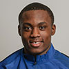
Charles Conwell
- Middleweight - 75 kg.
- Returning Olympian
- Birthdate: Nov. 2, 1997
- Birthplace: Detroit
- Hometown: Cleveland
- School: Cleveland Heights High School '16
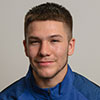
Nico Hernandez
- Light Flyweight - 49 kg.
- Returning Olympian
- Birthdate: Jan. 4, 1996
- Birthplace: Wichita, Kan.
- Hometown: Wichita, Kan.
Mikaela Mayer
- Lightweight - 60 kg.
- First-time Olympian
- Birthdate: July 4, 1990
- Birthplace: West Hills, Calif.
- Hometown: Los Angeles
- School: Northern Michigan University '19 - Business Administration
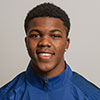
Gary Russell
- Light Welterweight - 64 kg.
- Returning Olympian
- Birthdate: June 14, 1996
- Birthplace: Washington, D.C.
- Hometown: Washington, D.C.
- School: Croom High School
Claressa Shields
- Middleweight - 75 kg.
- Returning Olympian (medalist)
- Birthdate: March 17, 1995
- Birthplace: Flint, Mich.
- Hometown: Flint, Mich.
- School: Flint Northwestern High School '13
Shakur Stevenson
- Bantamweight - 56 kg.
- Returning Olympian
- Birthdate: June 28, 1997
- Birthplace: Newark, N.J.
- Hometown: Newark, N.J.
- School: Central High School '15
Antonio Vargas
- Flyweight - 52 kg.
- First-time Olympian
- Birthdate: Aug. 15, 1996
- Birthplace: Houston
- Hometown: Kissimmee, Fla.
Canoe (Slalom)
Casey Eichfeld
- C1/C2
- Returning Olympian
- Birthdate: Nov. 15, 1989
- Birthplace: Harrisburg, Pa.
- Hometown: Drums, Pa.
Devin McEwan
- C2
- First-time Olympian
- Birthdate: Oct. 11, 1984
- Birthplace: Sharon, Conn.
- Hometown: Salisbury, Conn.
- School: The Hotchkiss School '12
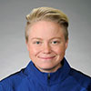
Ashley Nee
- K1
- First-time Olympian
- Birthdate: June 15, 1989
- Birthplace: Washington, D.C.
- Hometown: Darnestown, Md.
- School: University of Maryland
Michal Smolen
- K1
- First-time Olympian
- Birthdate: Sept. 13, 1993
- Birthplace: Krakow, Poland
- Hometown: Charlotte, N.C.
- School: Queens University
Canoe (Sprint)
Maggie Hogan
- K1
- First-time Olympian
- Birthdate: Jan. 1, 1979
- Birthplace: Langhorn, Pa.
- Hometown: Huntington Beach, Calif.
- School: University of California, Santa Barbara '01 - Bio-Psychology; Oklahoma City University '14 - MBA
Cycling
Mara Abbott
- Road Race
- First-time Olympian
- Birthdate: Nov. 14, 1985
- Birthplace: Boulder, Colo.
- Hometown: Boulder, Colo.
- School: Whitman College '08 - Economics
Kristin Armstrong
- Road Race, Time Trial
- Returning Olympian (medalist)
- Birthdate: Aug. 11, 1973
- Birthplace: Memphis, Tenn.
- Hometown: Boise, Idaho
- School: Universty of Idaho '95 - Exercise Physiology
Brent Bookwalter
- Road Race, Time Trial
- First-time Olympian
- Birthdate: Feb. 16, 1984
- Birthplace: Albuquerque, N.M.
- Hometown: Grand Rapids, Mich.
- School: Rockford High School (Rockford, Mich.) '02
Kelly Catlin
- Team Pursuit
- First-time Olympian
- Birthdate: Nov. 3, 1995
- Birthplace: Saint Paul, Minn.
- Hometown: Arden Hills, Minn.
- School: University of Minnesota '18 - Biomedical Engineering and Chinese
Brooke Crain
- BMX - Women's
- Returning Olympian
- Birthdate: April 29, 1993
- Birthplace: Visalia, Calif.
- Hometown: Visalia, Calif.
- School: Marian University
Lea Davison
- Mountain - Women's
- Returning Olympian
- Birthdate: May 19, 1983
- Birthplace: Syracuse, N.Y.
- Hometown: Jericho, Vt.
- School: Middlebury College '05 - Environmental Studies
Chloé Dygert
- Team Pursuit
- First-time Olympian
- Birthdate: Jan. 1, 1997
- Birthplace: Indianapolis
- Hometown: Brownsburg, Ind.
- School: Marian University
Connor Fields
- BMX - Men's
- Returning Olympian
- Birthdate: Sept. 14, 1992
- Birthplace: Plano, Texas
- Hometown: Las Vegas
- School: University of Nevada, Las Vegas '18 - Marketing
Howard Grotts
- Mountain - Men's
- First-time Olympian
- Birthdate: Jan. 12, 1993
- Birthplace: Durango, Colo.
- Hometown: Durango, Colo.
- School: Fort Lewis College '14, Mathematics
Megan Guarnier
- Road Race
- First-time Olympian
- Birthdate: May 4, 1985
- Birthplace: Glens Falls, N.Y.
- Hometown: Glens Falls, N.Y.
- School: Middlebury College '07 - Neuroscience
Sarah Hammer
- Omnium, Team Pursuit
- Returning Olympian (medalist)
- Birthdate: Aug. 18, 1983
- Birthplace: Torrance, Calif.
- Hometown: Temecula, Calif.
- School: Palomar College '13 - Liberal Studies
Bobby Lea
- Omnium
- Returning Olympian
- Birthdate: Oct. 17, 1983
- Birthplace: Easton, Md.
- Hometown: Topton, Pa.
- School: Penn State University '06 - Business Management
Nic Long
- BMX - Men's
- Returning Olympian
- Birthdate: Oct. 6, 1989
- Birthplace: San Diego
- Hometown: Lakeside, Calif.
- School: Grossmont-Cuyamaca Community College
Taylor Phinney
- Road Race, Time Trial
- Returning Olympian
- Birthdate: June 27, 1990
- Birthplace: Boulder, Colo.
- Hometown: Boulder, Colo.
- School: Boulder High School (Boulder, Colo.) '07
Alise Post
- BMX - Women's
- Returning Olympian
- Birthdate: Jan. 17, 1991
- Birthplace: St. Cloud, Minn.
- Hometown: St. Cloud, Minn.
- School: University of San Diego '15 - Kinesiology
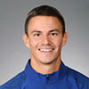
Corben Sharrah
- BMX - Men's
- First-time Olympian
- Birthdate: April 20, 1992
- Birthplace: Tuscon, Ariz.
- Hometown: Tucson, Ariz.
- School: University of Arizona '18 - Science
Evelyn Stevens
- Road Race, Time Trial
- Returning Olympian
- Birthdate: May 9, 1983
- Birthplace: Claremont, Calif.
- Hometown: San Francisco
- School: Dartmouth College '05 - Government
Jennifer Valente
- Team Pursuit
- First-time Olympian
- Birthdate: Dec. 24, 1994
- Birthplace: San Diego
- Hometown: San Diego
- School: University of Colorado, Colorado Springs - Undeclared
Ruth Winder
- Team Pursuit
- First-time Olympian
- Birthdate: July 9, 1993
- Birthplace: Steeton, United Kingdom
- Hometown: Lafayette, Calif.
- School: Winder Academy (Lafayette, Calif.) '12
Chloe Woodruff
- Mountain - Women's
- First-time Olympian
- Birthdate: July 21, 1987
- Birthplace: Denver
- Hometown: Boulder, Colo.
- School: University of Arizona '10 - Communications
Diving
David Boudia
- 10m Synchro, 10m Individual
- Returning Olympian (medalist)
- Birthdate: April 24, 1989
- Birthplace: Abilene, Texas
- Hometown: West Lafayette, Ind.
- School: Purdue University '14 - Communications
Kassidy Cook
- 3m Individual
- First-time Olympian
- Birthdate: May 9, 1995
- Birthplace: Plantation, Fla.
- Hometown: The Woodlands, Texas
- School: Stanford University '17 - Communications/Advertising
Amy Cozad
- 10m Synchro
- First-time Olympian
- Birthdate: May 6, 1991
- Birthplace: Indianapolis
- Hometown: Indianapolis
- School: Indiana University '13 - Mathematics
Sam Dorman
- 3m Synchro
- First-time Olympian
- Birthdate: Aug. 30, 1991
- Birthplace: Miami
- Hometown: Tempe, Ariz.
- School: University of Miami '15 - Mechanical Engineering
Michael Hixon
- 3m Synchro, 3m Individual
- First-time Olympian
- Birthdate: July 16, 1994
- Birthplace: Amherst, Mass.
- Hometown: Amherst, Mass.
- School: Indiana University '18 - Economic Consulting and Public Policy
Kristian Ipsen
- 3m Individual
- Returning Olympian (medalist)
- Birthdate: Oct. 20, 1992
- Birthplace: Walnut Creek, Calif.
- Hometown: Clayton, Calif.
- School: Stanford University '15 - Science, Technology and Society
Steele Johnson
- 10m Synchro, 10m Individual
- First-time Olympian
- Birthdate: June 16, 1996
- Birthplace: Indianapolis
- Hometown: Carmel, Ind.
- School: Purdue University '18 - Film and Video Studies
Abby Johnston
- 3m Individual
- Returning Olympian (medalist)
- Birthdate: Nov. 16, 1989
- Birthplace: Upper Arlington, Ohio
- Hometown: Upper Arlington, Ohio
- School: Duke University '13 - Psychology/Chemistry; Duke University '18 - Doctor of Medicine
Jessica Parratto
- 10m Synchro, 10m Individual
- First-time Olympian
- Birthdate: June 26, 1994
- Birthplace: Bloomington, Ind.
- Hometown: Dover, N.H.
- School: Indiana University '18 - Liberal Studies
Katrina Young
- 10m Individual
- First-time Olympian
- Birthdate: Jan. 10, 1992
- Birthplace: Shoreline, Wash.
- Hometown: Seattle
- School: Florida State University '14 - Commercial Music
Equestrian
Allison Brock
- Dressage
- First-time Olympian
- Birthdate: Dec. 7, 1979
- Birthplace: Honolulu
- Hometown: Wellington, Fla.
- School: Kailua High School (Kailua, Hawaii) '97
Lucy Davis
- Jumping
- First-time Olympian
- Birthdate: Oct. 22, 1992
- Birthplace: Los Angeles
- Hometown: Los Angeles
- School: Stanford University '15 - Architectural Design
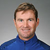
Phillip Dutton
- Eventing
- Returning Olympian (medalist)
- Birthdate: Sept. 13, 1963
- Birthplace: Nyngan, Australia
- Hometown: West Grove, Pa.
- School: Newington College '84 - Farming
Kent Farrington
- Jumping
- First-time Olympian
- Birthdate: Dec. 28, 1980
- Birthplace: Chicago
- Hometown: Wellington, Fla.
- School: The Latin School of Chicago (Chicago, Ill.) '99
Laura Graves
- Dressage
- First-time Olympian
- Birthdate: July 22, 1987
- Birthplace: Burlington, Vt.
- Hometown: Orlando, Fla.
- School: Harwood Union High School (Duxbury, Vt.) '04
Lauren Kieffer
- Eventing
- First-time Olympian
- Birthdate: June 6, 1987
- Birthplace: Mount Carmel, Ill.
- Hometown: Middleburg, Va.
- School: Mount Carmel High School (Mount Carmel, Ill.) '05
Beezie Madden
- Jumping
- Returning Olympian (medalist)
- Birthdate: Nov. 20, 1963
- Birthplace: Milwaukee
- Hometown: Cazenovia, N.Y.
- School: Nicolet High School (Glendale, Wis.) '80
Boyd Martin
- Eventing
- Returning Olympian
- Birthdate: Aug. 20, 1979
- Birthplace: Sydney
- Hometown: Cochranville, Pa.
- School: Nimbin University '98 - Biology
Clark Montgomery
- Eventing
- First-time Olympian
- Birthdate: May 20, 1981
- Birthplace: Bryan, Texas
- Hometown: Mineral Wells, Texas
- School: Bryan High School (Bryan, Texas) '97
Kasey Perry-Glass
- Dressage
- First-time Olympian
- Birthdate: Oct. 12, 1987
- Birthplace: Sacramento, Calif.
- Hometown: Orangevale, Calif.
- School: California State University, Sacramento '11 - Business Entrepreneurship
Steffen Peters
- Dressage
- Returning Olympian (medalist)
- Birthdate: Sept. 18, 1964
- Birthplace: Wesel, Germany
- Hometown: San Diego
- School: Voerde High School (Voerde, Germany) '84
McLain Ward
- Jumping
- Returning Olympian (medalist)
- Birthdate: Oct. 17, 1975
- Birthplace: Mount Kisco, N.Y.
- Hometown: Brewster, N.Y.
- School: Greenwich Country Day
Fencing
Miles Chamley-Watson
- Foil
- Returning Olympian
- Birthdate: Dec. 3, 1989
- Birthplace: New York
- Hometown: New York
- School: Penn State University '13 - Sports Management
Eli Dershwitz
- Saber
- First-time Olympian
- Birthdate: Sept. 23, 1995
- Birthplace: Boston
- Hometown: Sherborn, Mass.
- School: Harvard University '19
Katharine Holmes
- Epee
- First-time Olympian
- Birthdate: July 15, 1993
- Birthplace: Washington, D.C.
- Hometown: Washington, D.C.
- School: Princeton University '17 - Neuroscience
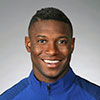
Daryl Homer
- Saber
- Returning Olympian
- Birthdate: July 16, 1990
- Birthplace: St. Thomas, U.S. Virgin Islands
- Hometown: Bronx, N.Y.
- School: St. John's University '13 - Advertising
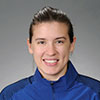
Courtney Hurley
- Epee
- Returning Olympian (medalist)
- Birthdate: Sept. 30, 1990
- Birthplace: San Antonio
- Hometown: San Antonio
- School: University of Notre Dame '13 - Film, Television and Theater, supplementary major in Computer Applications
Kelley Hurley
- Epee
- Returning Olympian (medalist)
- Birthdate: April 4, 1988
- Birthplace: San Antonio
- Hometown: San Antonio
- School: University of Notre Dame '10 - Design
Lee Kiefer
- Foil
- Returning Olympian
- Birthdate: June 15, 1994
- Birthplace: Cleveland
- Hometown: Lexington, Ky.
- School: University of Notre Dame '13 - Premed
Alexander Massialas
- Foil
- Returning Olympian
- Birthdate: April 20, 1994
- Birthplace: San Francisco
- Hometown: San Francisco
- School: Stanford University - Engineering
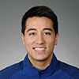
Gerek Meinhardt
- Foil
- Returning Olympian
- Birthdate: July 27, 1990
- Birthplace: San Francisco
- Hometown: San Francisco
- School: University of Notre Dame '13 - Management
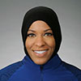
Ibtihaj Muhammad
- Saber
- Returning Olympian
- Birthdate: Dec. 4, 1985
- Birthplace: Maplewood, N.J.
- Hometown: Maplewood, N.J.
- School: Duke University '07 - Dual Bachelor's degrees in international relations and African and African-American studies
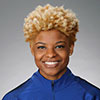
Nzingha Prescod
- Foil
- Returning Olympian
- Birthdate: Aug. 14, 1992
- Birthplace: New York
- Hometown: Brooklyn, N.Y.
- School: Columbia University '15 - Political Science w / Concentration in Race & Ethnicity
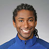
Jason Pryor
- Epee
- First-time Olympian
- Birthdate: Sept. 26, 1987
- Birthplace: Cleveland
- Hometown: South Euclid, Ohio
- School: The Ohio State University '09 - English
Dagmara Wozniak
- Saber
- Returning Olympian
- Birthdate: July 1, 1988
- Birthplace: Wroclaw, Poland
- Hometown: Avenel, N.J.
- School: St. John's University '13 - Biology
Mariel Zagunis
- Saber
- Returning Olympian (medalist)
- Birthdate: March 3, 1985
- Birthplace: Portland, Ore.
- Hometown: Portland, Ore.
- School: University of Notre Dame - Anthropology
Field Hockey
Katie Bam
- Striker
- Returning Olympian
- Birthdate: Dec. 6, 1988
- Birthplace: Montgomery, Pa.
- Hometown: Blue Bell, Pa.
- School: University of Maryland '13 - Family Sciences
Jackie Briggs
- Goalkeeper
- First-time Olympian
- Birthdate: May 23, 1988
- Birthplace: Reading, Pa.
- Hometown: Robesonia, Pa.
- School: University of North Carolina '10 - Studio Art
Lauren Crandall
- Defender
- Returning Olympian
- Birthdate: March 17, 1985
- Birthplace: Pittsburgh
- Hometown: Doylestown, Pa.
- School: Wake Forest University '07 - Communications; Keller Graduate School of Management
Rachel Dawson
- Midfielder
- Returning Olympian
- Birthdate: Aug. 2, 1985
- Birthplace: Camden, N.J.
- Hometown: Berlin, N.J.
- School: University of North Carolina '07 - Business Administration

Katelyn Falgowski
- Midfielder
- Returning Olympian
- Birthdate: Oct. 23, 1988
- Birthplace: Wilmington, Del.
- Hometown: Landenberg, Pa.
- School: University of North Carolina '11 - Communications
Stefanie Fee
- Defender
- First-time Olympian
- Birthdate: March 11, 1990
- Birthplace: Virginia Beach, Va.
- Hometown: Virginia Beach, Va.
- School: Duke University '12 - Psychology
Melissa Gonzalez
- Midfielder
- Returning Olympian
- Birthdate: Jan. 24, 1989
- Birthplace: Peekskill, N.Y.
- Hometown: Mohegan Lake, N.Y.
- School: University of Connecticut '11 - Kinesiology & Coaching and Administration
Michelle Kasold
- Striker
- Returning Olympian
- Birthdate: May 26, 1987
- Birthplace: San Jose, Calif.
- Hometown: Chapel Hill, N.C.
- School: Wake Forest University '09 - Sociology
Kelsey Kolojejchick
- Striker
- First-time Olympian
- Birthdate: Oct. 2, 1991
- Birthplace: Kingston, Pa.
- Hometown: Larksville, Pa.
- School: University of North Carolina '13 - Communications
Alyssa Manley
- Defender
- First-time Olympian
- Birthdate: May 27, 1994
- Birthplace: Lancaster, Pa.
- Hometown: Lititz, Pa.
- School: Syracuse University '16 - Child and Family Studies
Julia Reinprecht
- Defender
- Returning Olympian
- Birthdate: July 12, 1991
- Birthplace: Philadelphia
- Hometown: Perkasie, Pa.
- School: Princeton University '14 - Politics
Katie Reinprecht
- Midfielder
- Returning Olympian
- Birthdate: Nov. 1, 1989
- Birthplace: Philadelphia
- Hometown: Perkasie, Pa.
- School: Princeton University '13 - Sociology
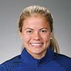
Kathleen Sharkey
- Striker
- First-time Olympian
- Birthdate: April 30, 1990
- Birthplace: Wilkes-Barre, Pa.
- Hometown: Moosic, Pa.
- School: Princeton University '13 - Sociology
Caitlin Van Sickle
- Defender
- First-time Olympian
- Birthdate: Jan. 26, 1990
- Birthplace: Wilmington, Del.
- Hometown: Wilmington, Del.
- School: University of North Carolina '12 - Communications
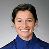
Michelle Vittese
- Midfielder
- Returning Olympian
- Birthdate: Dec. 6, 1989
- Birthplace: Philadelphia
- Hometown: Cherry Hill, N.J.
- School: University of Virginia '11 - History
Jill Witmer
- Striker
- First-time Olympian
- Birthdate: Oct. 1, 1991
- Birthplace: Lancaster, Pa.
- Hometown: Lancaster, Pa.
- School: University of Maryland '14 - Family Sciences
Golf
Rickie Fowler
- First-time Olympian
- Birthdate: Dec. 13, 1988
- Birthplace: Murrieta, Calif.
- Hometown: Murrieta, Calif.
- School: Oklahoma State University
Matt Kuchar
- First-time Olympian
- Birthdate: June 21, 1978
- Birthplace: Winter Park, Fla.
- Hometown: Sea Island, Ga.
- School: Georgia Institute of Technology
Stacy Lewis
- First-time Olympian
- Birthdate: Feb. 16, 1985
- Birthplace: Toledo, Ohio
- Hometown: The Woodlands, Texas
- School: University of Arkansas '08 - Finance and Accounting
Gerina Piller
- First-time Olympian
- Birthdate: March 29, 1985
- Birthplace: Roswell, N.M.
- Hometown: Roswell, N.M.
- School: University of Texas, El Paso '07 - Mathematics
Patrick Reed
- First-time Olympian
- Birthdate: Aug. 5, 1990
- Birthplace: San Antonio
- Hometown: Houston
- School: Augusta State University '09, Bachelor of Science
Lexi Thompson
- First-time Olympian
- Birthdate: Feb. 10, 1995
- Birthplace: Coral Springs, Fla.
- Hometown: Coral Springs, Fla.
- School: Broward Virtual High School (Coral Springs, Fla.) '12
Bubba Watson
- First-time Olympian
- Birthdate: Nov. 5, 1978
- Birthplace: Bagdad, Fla.
- Hometown: Bagdad, Fla.
- School: University of Georgia
Gymnastics
Nicole Ahsinger
- Trampoline
- First-time Olympian
- Birthdate: May 12, 1998
- Birthplace: San Diego
- Hometown: San Diego
- School: Scripps Ranch (San Diego, Calif.) '16
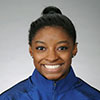
Simone Biles
- Artistic – Team
- First-time Olympian
- Birthdate: March 14, 1997
- Birthplace: Columbus, Ohio
- Hometown: Spring, Texas
- School: Home School '15
Chris Brooks
- Artistic – Team
- First-time Olympian
- Birthdate: Dec. 19, 1986
- Birthplace: Houston
- Hometown: Houston
- School: University of Oklahoma - Business Management
Jake Dalton
- Artistic – Team
- Returning Olympian
- Birthdate: July 22, 1991
- Birthplace: Oak Lawn, Ill.
- Hometown: Sparks, Nev.
- School: University of Oklahoma '14 - Human Relations
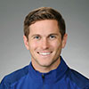
Logan Dooley
- Trampoline
- First-time Olympian
- Birthdate: Sept. 26, 1987
- Birthplace: Mission Viejo, Calif.
- Hometown: Lake Forest, Calif.
- School: Saddleback College '11 - Child Development
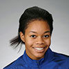
Gabby Douglas
- Artistic – Team
- Returning Olympian (medalist)
- Birthdate: Dec. 31, 1995
- Birthplace: Newport News, Va.
- Hometown: Los Angeles
- School: Oak Park High School (Oak Park, Calif.) '15
Kiana Eide
- Rhythmic group
- First-time Olympian
- Birthdate: Sept. 25, 1998
- Birthplace: Fridley, Minn.
- Hometown: St. Francis, Minn.
- School: Glenbrook North High School (Northbrook, Ill.) '17
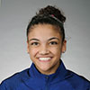
Laurie Hernandez
- Artistic – Team
- First-time Olympian
- Birthdate: June 9, 2000
- Birthplace: New Brunswick, N.J.
- Hometown: Old Bridge, N.J.
- School: Abeka Academy (Old Bridge, N.J.) '18
Alisa Kano
- Rhythmic group
- First-time Olympian
- Birthdate: Nov. 7, 1994
- Birthplace: Tokyo
- Hometown: New York
- School: Oakton Community College - Undeclared
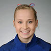
Madison Kocian
- Artistic – Team
- First-time Olympian
- Birthdate: June 15, 1997
- Birthplace: Dallas
- Hometown: Dallas
- School: Spring Creek Academy (Plano, Texas) '15
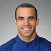
Danell Leyva
- Artistic – Team
- Returning Olympian (medalist)
- Birthdate: Oct. 30, 1991
- Birthplace: Cardenas, Cuba
- Hometown: Homestead, Fla.
- School: Homeschooled '10
Natalie McGiffert
- Rhythmic group
- First-time Olympian
- Birthdate: March 14, 1997
- Birthplace: Los Angeles
- Hometown: Topanga, Calif.
- School: Glenbrook High School (Northbrook, Ill.) '15
Sam Mikulak
- Artistic – Team
- Returning Olympian
- Birthdate: Oct. 13, 1992
- Birthplace: Corona del Mar, Calif.
- Hometown: Newport Beach, Calif.
- School: University of Michigan '14 - Psychology
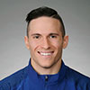
Alex Naddour
- Artistic – Team
- First-time Olympian
- Birthdate: March 4, 1991
- Birthplace: Mesa, Ariz.
- Hometown: Gilbert, Ariz.
- School: University of Oklahoma - Business
Aly Raisman
- Artistic – Team
- Returning Olympian (medalist)
- Birthdate: May 25, 1994
- Birthplace: Boston
- Hometown: Needham, Mass.
- School: Needham High School '12 (Needham Heights, Mass.)
Monica Rokhman
- Rhythmic group
- First-time Olympian
- Birthdate: May 27, 1997
- Birthplace: Northbrook, Ill.
- Hometown: Northbrook, Ill.
- School: Glenbrook North High School (Northbrook, Ill.) '15
Kristen Shaldybin
- Rhythmic group
- First-time Olympian
- Birthdate: Aug. 8, 1997
- Birthplace: Woonsocket, R.I.
- Hometown: Brooklyn, N.Y.
- School: Highland Park High School (Highland Park, Ill.) '16
Laura Zeng
- Rhythmic individual
- First-time Olympian
- Birthdate: Oct. 14, 1999
- Birthplace: Hartford, Conn.
- Hometown: Libertyville, Ill.
- School: Libertyville High School (Libertyville, Ill.) '18
Indoor Volleyball
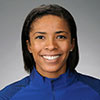
Rachael Adams
- Middle Blocker
- First-time Olympian
- Birthdate: June 3, 1990
- Birthplace: Cincinnati
- Hometown: Cincinnati
- School: University of Texas - Advertising
Foluke Akinradewo
- Middle Blocker
- Returning Olympian (medalist)
- Birthdate: Oct. 5, 1987
- Birthplace: London, Ontario
- Hometown: Ft. Lauderdale, Fla.
- School: Stanford University
Matt Anderson
- Outside Hitter
- Returning Olympian
- Birthdate: April 18, 1987
- Birthplace: Buffalo, N.Y.
- Hometown: West Seneca, N.Y.
- School: Penn State University - Kinesiology
Kayla Banwarth
- Libero
- First-time Olympian
- Birthdate: Jan. 21, 1989
- Birthplace: Dubuque, Iowa
- Hometown: Dubuque, Iowa
- School: University of Nebraska '12 - English
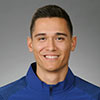
Micah Christenson
- Setter
- First-time Olympian
- Birthdate: May 8, 1993
- Birthplace: Honolulu
- Hometown: Honolulu
- School: University of Southern California
Christa Dietzen
- Middle Blocker
- Returning Olympian (medalist)
- Birthdate: Oct. 12, 1986
- Birthplace: Sewickley, Pa.
- Hometown: Hopewell, Pa.
- School: Penn State University '09 - Elementary Education
Alisha Glass
- Setter
- First-time Olympian
- Birthdate: April 5, 1988
- Birthplace: Traverse City, Mich.
- Hometown: Leland, Mich.
- School: Penn State University - Kinesiology, Human Development and Family Studies minor
Kim Hill
- Outside Hitter
- First-time Olympian
- Birthdate: Nov. 30, 1989
- Birthplace: Portland, Ore.
- Hometown: Portland, Ore.
- School: Pepperdine University
Max Holt
- Middle Blocker
- First-time Olympian
- Birthdate: March 12, 1987
- Birthplace: Cincinnati
- Hometown: Cincinnati
- School: Penn State University '09 - Journalism
Thomas Jaeschke
- Outside Hitter
- First-time Olympian
- Birthdate: Sept. 4, 1993
- Birthplace: Wheaton, Ill.
- Hometown: Wheaton, Ill.
- School: Loyola University Chicago
Jordan Larson
- Outside Hitter
- Returning Olympian (medalist)
- Birthdate: Oct. 16, 1986
- Birthplace: Fremont, Neb.
- Hometown: Hooper, Neb.
- School: University of Nebraska '08 - Communication, Psychology minor
David Lee
- Middle Blocker
- Returning Olympian (medalist)
- Birthdate: March 8, 1982
- Birthplace: El Cajon, Calif.
- Hometown: Alpine, Calif.
- School: Long Beach State - Human Development
Carli Lloyd
- Setter
- First-time Olympian
- Birthdate: Aug. 6, 1989
- Birthplace: Fallbrook, Calif.
- Hometown: Bonsall, Calif.
- School: University of California, Berkeley '11 - Social Welfare
Karsta Lowe
- Opposite
- First-time Olympian
- Birthdate: Feb. 2, 1993
- Birthplace: San Diego
- Hometown: San Diego
- School: UCLA
Kelly Murphy
- Opposite
- First-time Olympian
- Birthdate: Oct. 20, 1989
- Birthplace: Joliet, Ill.
- Hometown: Wilmington, Ill.
- School: University of Florida - Elementary Education
Reid Priddy
- Outside Hitter
- Returning Olympian (medalist)
- Birthdate: Oct. 1, 1977
- Birthplace: Richmond, Va.
- Hometown: Richmond, Va.
- School: Loyola Marymount '00 - Communication Studies
Kelsey Robinson
- Outside Hitter
- First-time Olympian
- Birthdate: June 25, 1992
- Birthplace: Elmhurt, Ill.
- Hometown: Bartlett, Ill.
- School: University of Nebraska
Aaron Russell
- Outside Hitter
- First-time Olympian
- Birthdate: June 4, 1993
- Birthplace: Arbutus, Md.
- Hometown: Ellicott City, Md.
- School: Penn State University
Taylor Sander
- Outside Hitter
- First-time Olympian
- Birthdate: March 17, 1992
- Birthplace: Fountain Valley, Calif.
- Hometown: Corona, Calif.
- School: Brigham Young University
Erik Shoji
- Libero
- First-time Olympian
- Birthdate: Aug. 24, 1989
- Birthplace: Honolulu
- Hometown: Honolulu
- School: Stanford University
Kawika Shoji
- Setter
- First-time Olympian
- Birthdate: Nov. 11, 1987
- Birthplace: Honolulu
- Hometown: Honolulu
- School: Stanford University '10 - Political Science
David Smith
- Indoor, MB
- Returning Olympian
- Birthdate: May 15, 1985
- Birthplace: Panorama City, Calif.
- Hometown: Saugus, Calif.
- School: University of California, Irvine
Courtney Thompson
- Setter
- Returning Olympian (medalist)
- Birthdate: Nov. 4, 1984
- Birthplace: Bellevue, Wash.
- Hometown: Kent, Wash.
- School: University of Washington
Murphy Troy
- Outside Hitter
- First-time Olympian
- Birthdate: May 31, 1989
- Birthplace: St. Louis
- Hometown: St. Louis
- School: University of Southern California - Physics
Judo
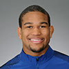
Colton Brown
- 90 kg.
- First-time Olympian
- Birthdate: Oct. 8, 1991
- Birthplace: San Jose, Calif.
- Hometown: Piscataway, N.J.
- School: San Jose State University
Angelica Delgado
- 52 kg.
- First-time Olympian
- Birthdate: Dec. 14, 1990
- Birthplace: Miami
- Hometown: Miami
- School: Florida International University
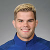
Nick Delpopolo
- 73 kg.
- Returning Olympian
- Birthdate: Feb. 8, 1989
- Birthplace: Niksic, Montenegro
- Hometown: Davie, Fla.
- School: Schenectady County Community College
Kayla Harrison
- 78 kg.
- Returning Olympian (medalist)
- Birthdate: July 2, 1990
- Birthplace: Middletown, Ohio
- Hometown: Middletown, Ohio
- School: Middleton Highschool
Marti Malloy
- 57 kg.
- Returning Olympian (medalist)
- Birthdate: June 23, 1986
- Birthplace: Oak Harbor, Wash.
- Hometown: Oak Harbor, Wash.
- School: San Jose State University
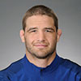
Travis Stevens
- 81 kg.
- Returning Olympian
- Birthdate: Feb. 28, 1986
- Birthplace: Tacoma, Wash.
- Hometown: Tacoma, Wash.
- School: North Shore Community College
Pentathlon
Isabella Isaksen
- Women's
- First-time Olympian
- Birthdate: Nov. 22, 1993
- Birthplace: Fayetteville, Ark.
- Hometown: Fayetteville, Ark.
- School: DeVry University '16 - Environmental Sustainability

Margaux Isaksen
- Women's
- Returning Olympian
- Birthdate: Oct. 7, 1991
- Birthplace: Fayetteville, Ark.
- Hometown: Fayetteville, Ark.
- School: Fayetteville High School (Fayetteville, Ark.) '10
Nathan Schrimsher
- Men's
- First-time Olympian
- Birthdate: May 22, 1992
- Birthplace: Roswell, N.M.
- Hometown: Roswell, N.M.
- School: Eastern New Mexico State University '10
Rowing
Kate Bertko
- Lightweight Women's Double Sculls
- First-time Olympian
- Birthdate: Nov. 8, 1983
- Birthplace: Oakland, Calif.
- Hometown: Oakland, Calif.
- School: Princeton University
Andrew Campbell, Jr.
- Lightweight Men's Double Sculls
- First-time Olympian
- Birthdate: Feb. 2, 1992
- Birthplace: Barrington, Ill.
- Hometown: Cambridge, Mass.
- School: Harvard University
Charlie Cole
- Men's Four
- Returning Olympian (medalist)
- Birthdate: June 21, 1986
- Birthplace: New York
- Hometown: New Canaan, Conn.
- School: Yale University, '07; Oxford University, '08
Michael DiSanto
- Men's Eight
- First-time Olympian
- Birthdate: Dec. 10, 1989
- Birthplace: Boston
- Hometown: Boston
- School: Harvard University '12 - Psychology
Sam Dommer
- Men's Eight
- First-time Olympian
- Birthdate: Sept. 4, 1991
- Birthplace: Roseville, Calif.
- Hometown: Folsom, Calif.
- School: University of Washington '14 - Electcrial Engineering
Tracy Eisser
- Women’s Quadruple Sculls
- First-time Olympian
- Birthdate: Nov. 20, 1989
- Birthplace: Summit, N.J.
- Hometown: Fair Lawn, N.J.
- School: Cornell University '12
Amanda Elmore
- Women's Eight
- First-time Olympian
- Birthdate: March 13, 1991
- Birthplace: West Lafayette, Ind.
- Hometown: West Lafayette, Ind.
- School: Purdue University '13 - Biology
Anthony Fahden
- Lightweight Men's Four
- Returning Olympian
- Birthdate: Feb. 27, 1986
- Birthplace: Berkeley, Calif.
- Hometown: Lafayette, Calif.
- School: Dartmouth College '08 - Art History
Tessa Gobbo
- Women's Eight
- First-time Olympian
- Birthdate: Dec. 8, 1990
- Birthplace: Keene, N.H.
- Hometown: Chesterfield, N.H.
- School: Brown University '13 - Sociology

Nareg Guregian
- Men's Pair
- First-time Olympian
- Birthdate: Jan. 20, 1989
- Birthplace: Los Angeles
- Hometown: North Hills, Calif.
- School: University of California '10 - Media Studies and Mass Communications
Austin Hack
- Men's Eight
- First-time Olympian
- Birthdate: May 17, 1992
- Birthplace: Springfield, Mass.
- Hometown: Old Lyme, Conn.
- School: Stanford University '14 - Political Science
Megan Kalmoe
- Women’s Quadruple Sculls
- Returning Olympian (medalist)
- Birthdate: Aug. 21, 1983
- Birthplace: Minneapolis
- Hometown: St. Croix Falls, Wis.
- School: University of Washington '06 - Latin and English
Alex Karwoski
- Men's Eight
- First-time Olympian
- Birthdate: Sept. 16, 1990
- Birthplace: Nashua, N.H.
- Hometown: Hollis, N.H.
- School: Cornell University 12 - Civil and Environmental Engineering
Devery Karz
- Lightweight Women's Double Sculls
- First-time Olympian
- Birthdate: Feb. 18, 1988
- Birthplace: Park City, Utah
- Hometown: Park City, Utah
- School: Oregon State University
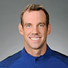
Steve Kasprzyk
- Men's Eight
- Returning Olympian
- Birthdate: Feb. 14, 1982
- Birthplace: Willingboro, N.J.
- Hometown: Cinnaminson, N.J.
- School: Drexel University '05
Edward King
- Lightweight Men's Four
- First-time Olympian
- Birthdate: June 14, 1989
- Birthplace: Kempton Park, South Africa
- Hometown: Ironton, Mo.
- School: U.S. Naval Academy '11 - Oceanography
Josh Konieczny
- Lightweight Men's Double Sculls
- First-time Olympian
- Birthdate: May 26, 1991
- Birthplace: Toledo, Ohio
- Hometown: Millbury, Ohio
- School: Dartmouth College '13 - Economics
Grace Latz
- Women’s Quadruple Sculls
- First-time Olympian
- Birthdate: Feb. 21, 1988
- Birthplace: Ann Arbor, Mich.
- Hometown: Jackson, Mich.
- School: University of Wisconsin '11 - International Studies, Global Commons and Environmental Studies
Eleanor Logan
- Women's Eight
- Returning Olympian (medalist)
- Birthdate: Dec. 27, 1987
- Birthplace: Portland, Maine
- Hometown: Boothbay Harbor, Maine
- School: Stanford University '11
Grace Luczak
- Women's Pair
- First-time Olympian
- Birthdate: May 24, 1989
- Birthplace: Royal Oak, Mich.
- Hometown: Ann Arbor, Mich.
- School: Stanford University '11 - Human Biology
Adrienne Martelli
- Women’s Quadruple Sculls
- Returning Olympian (medalist)
- Birthdate: Dec. 3, 1987
- Birthplace: Glendale, Calif.
- Hometown: University Place, Wash.
- School: University of Washington '10 - Biology, Physiology
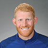
Matt Miller
- Men's Four
- First-time Olympian
- Birthdate: Jan. 13, 1989
- Birthplace: Fairfax, Va.
- Hometown: Springfield, Va.
- School: University of Virginia '11 - Systems and Information Engineering
Felice Mueller
- Women's Pair
- First-time Olympian
- Birthdate: Oct. 15, 1989
- Birthplace: White Plaines, N.Y.
- Hometown: Cleveland
- School: University of Michigan - Art and Design
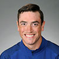
Rob Munn
- Men's Eight
- First-time Olympian
- Birthdate: July 26, 1990
- Birthplace: Bellevue, Wash.
- Hometown: Redmond, Wash.
- School: University of Washington
Meghan Musnicki
- Women's Eight
- Returning Olympian (medalist)
- Birthdate: Feb. 5, 1983
- Birthplace: Canandaigua, N.Y.
- Hometown: Naples, N.Y.
- School: Ithaca College '05 - Psychology
Tyler Nase
- Lightweight Men's Four
- First-time Olympian
- Birthdate: Aug. 30, 1990
- Birthplace: Phoenixville, Pa.
- Hometown: Phoenixville, Pa.
- School: Princeton University '13 - Sociology
Meghan O'Leary
- Women's Double Sculls
- First-time Olympian
- Birthdate: Aug. 24, 1984
- Birthplace: Tulsa, Okla.
- Hometown: Baton Rouge, La.
- School: University of Virginia
Glenn Ochal
- Men's Eight
- Returning Olympian (medalist)
- Birthdate: March 1, 1986
- Birthplace: Philadelphia
- Hometown: Philadelphia
- School: Princeton University '08 - Economics
Sam Ojserkis
- Men's Eight
- First-time Olympian
- Birthdate: March 24, 1990
- Birthplace: Pomona, N.J.
- Hometown: Linwood, N.J.
- School: University of Washington '12 - Geography
Amanda Polk
- Women's Eight
- First-time Olympian
- Birthdate: Aug. 2, 1986
- Birthplace: Pittsburgh
- Hometown: Pittsburgh
- School: University of Notre Dame '08 - Biochemistry
Robin Prendes
- Lightweight Men's Four
- Returning Olympian
- Birthdate: Dec. 13, 1988
- Birthplace: Matanzas, Cuba
- Hometown: Miami
- School: Princeton University '11
Emily Regan
- Women's Eight
- First-time Olympian
- Birthdate: June 10, 1988
- Birthplace: Buffalo, N.Y.
- Hometown: Buffalo, N.Y.
- School: Michigan State University '10
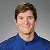
Henrik Rummel
- Men's Four
- Returning Olympian (medalist)
- Birthdate: Sept. 26, 1987
- Birthplace: Copenhagen, Denmark
- Hometown: Pittsford, N.Y.
- School: Harvard University '09 - Applied Mathematics, Economics
Lauren Schmetterling
- Women's Eight
- First-time Olympian
- Birthdate: Aug. 3, 1988
- Birthplace: Moorestown, N.J.
- Hometown: Moorestown, N.J.
- School: Colgate University '10
Kerry Simmonds
- Women's Eight
- First-time Olympian
- Birthdate: April 3, 1989
- Birthplace: Palo Alto, Calif.
- Hometown: San Diego
- School: University of Washington '11 - Biology
Katelin Snyder
- Women's Eight
- First-time Olympian
- Birthdate: Aug. 16, 1987
- Birthplace: Nashua, N.H.
- Hometown: Orlando, Fla.
- School: University of Washington
Gevvie Stone
- Women's Single Sculls
- Returning Olympian
- Birthdate: July 11, 1985
- Birthplace: Boston
- Hometown: Newton, Mass.
- School: Princeton University '07; 'Tufts University '14 - M.D.
Hans Struzyna
- Men's Eight
- First-time Olympian
- Birthdate: March 31, 1989
- Birthplace: Seattle
- Hometown: Kirkland, Wash.
- School: University of Washington '11 - Business
Ellen Tomek
- Women's Double Sculls
- Returning Olympian
- Birthdate: May 1, 1984
- Birthplace: Flushing, Mich.
- Hometown: Flushing, Mich.
- School: University of Michigan '02
Seth Weil
- Men's Four
- First-time Olympian
- Birthdate: March 9, 1987
- Birthplace: Menlo Park, Calif.
- Hometown: Menlo Park, Calif.
- School: University of California, Davis '11
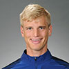
Anders Weiss
- Men's Pair
- First-time Olympian
- Birthdate: Nov. 5, 1992
- Birthplace: Providence, R.I.
- Hometown: Barrington, R.I.
- School: Brown University '16 - Economics
Rugby
Perry Baker
- Wing
- First-time Olympian
- Birthdate: June 29, 1986
- Birthplace: New Smyrna Beach, Fla.
- Hometown: Daytona Beach, Fla.
- School: Fairmont State University '10 - Criminal Justice

Garrett Bender
- Forward
- First-time Olympian
- Birthdate: Dec. 2, 1991
- Birthplace: Minneapolis
- Hometown: Minneapolis
- School: Minneapolis Washburn (Miinneapolis, Minn.) '10
Ryan Carlyle
- Hooker
- First-time Olympian
- Birthdate: Nov. 24, 1989
- Birthplace: Nycack, N.Y.
- Hometown: West Nyack, N.Y.
- School: University of South Carolina '11 - Sport Management; DeVry University '14 - MBA International Business
Lauren Doyle
- Wing / Full-Back
- First-time Olympian
- Birthdate: Feb. 23, 1991
- Birthplace: Springfield, Ill.
- Hometown: Boody, Ill.
- School: Eastern Illinois University '14 - Marketing
Andrew Durutalo
- Prop
- First-time Olympian
- Birthdate: Oct. 25, 1987
- Birthplace: New York
- Hometown: San Diego
- School: Binghamton University '11 - Business Administration

Nate Ebner
- Forward
- First-time Olympian
- Birthdate: Dec. 14, 1988
- Birthplace: Columbus, Ohio
- Hometown: Columbus, Ohio
- School: The Ohio State University '12 - Nutrition/Exercise Science
Nana Fa'avesi
- Prop
- First-time Olympian
- Birthdate: Feb. 5, 1992
- Birthplace: Salinas, Calif.
- Hometown: Sacramento, Calif.
- School: Luther Burbank High School (Sacramento, Calif.) '10
Carmen Farmer
- Lock
- First-time Olympian
- Birthdate: Dec. 4, 1980
- Birthplace: Richmond, Va.
- Hometown: Richmond, Va.
- School: Virginia Tech University '03 - Public and Urban Affairs; University of Maryland, Baltimore '06 - Law
Victoria Folayan
- Hooker
- First-time Olympian
- Birthdate: May 27, 1985
- Birthplace: Boston
- Hometown: Boston
- School: Stanford University '06 - Psychology, Drama
Kelly Griffin
- Prop
- First-time Olympian
- Birthdate: Nov. 7, 1986
- Birthplace: Berkeley, Calif.
- Hometown: Berkeley, Calif.
- School: UCLA '08 - Applied Mathematics
Madison Hughes
- Scrum Half
- First-time Olympian
- Birthdate: Oct. 26, 1992
- Birthplace: Epsom, United Kingdom
- Hometown: Lancaster, Mass.
- School: Dartmouth College '15 - History
Carlin Isles
- Wing
- First-time Olympian
- Birthdate: Nov. 21, 1989
- Birthplace: Akron, Ohio
- Hometown: Massillon, Ohio
- School: Ashland University '12 - Education Early Childhood
Jessica Javelet
- Wing
- First-time Olympian
- Birthdate: June 25, 1985
- Birthplace: San Diego
- Hometown: San Diego
- School: University of Louisville '07 - Marketing
Kathryn Johnson
- Center
- First-time Olympian
- Birthdate: Oct. 25, 1991
- Birthplace: Minneapolis
- Hometown: Hopkins, Minn.
- School: University of Wisconsin, Milwaukee
Alev Kelter
- Scrum Half
- First-time Olympian
- Birthdate: March 21, 1991
- Birthplace: Tampa, Fla.
- Hometown: Eagle River, Alaska
- School: University of Wisconsin '15 - Fine Arts
Folau Niua
- Fly-Half
- First-time Olympian
- Birthdate: Jan. 27, 1985
- Birthplace: Sacramento, Calif.
- Hometown: East Palo Alto, Calif.
- School: Woodside High School (River City, Calif.) '02
Ben Pinkelman
- Forward
- First-time Olympian
- Birthdate: June 13, 1994
- Birthplace: Omaha, Neb.
- Hometown: Centennial, Colo.
- School: Colorado State University '16 - Criminal Justice
Jillion Potter
- Prop
- First-time Olympian
- Birthdate: July 5, 1986
- Birthplace: Austin, Texas
- Hometown: Denver
- School: University of New Mexico '09 - Exercise Science
Richelle Stephens
- Flyhalf
- First-time Olympian
- Birthdate: July 22, 1996
- Birthplace: Fallbrook, Calif.
- Hometown: Fallbrook, Calif.
- School: Lindenwood University
Zack Test
- Hooker
- First-time Olympian
- Birthdate: Oct. 13, 1989
- Birthplace: Redwood City, Calif.
- Hometown: Redwood City, Calif.
- School: University of Oregon
Maka Unufe
- Wing
- First-time Olympian
- Birthdate: Sept. 28, 1991
- Birthplace: Chula Vista, Calif.
- Hometown: Provo, Utah
- School: Provo High School (Provo, Utah)
Chris Wyles
- Center/Fullback/Wing
- First-time Olympian
- Birthdate: Sept. 12, 1983
- Birthplace: Stamford, Conn.
- Hometown: Stamford, Conn.
- School: University of Nottingham
Sailing
Charlie Buckingham
- Laser (One-Person Dinghy)
- First-time Olympian
- Birthdate: Jan. 16, 1989
- Birthplace: Newport Beach, Calif.
- Hometown: Newport Beach, Calif.
- School: Georgetown University '11 - Government
Louisa Chafee
- Nacra 17 Class (Two-Person Mixed Multihull)
- Returning Olympian
- Birthdate: Sept. 24, 1991
- Birthplace: Providence, R.I.
- Hometown: Warwick, R.I.
- School: Brown University
Bora Gulari
- Nacra 17 Class (Two-Person Mixed Multihull)
- Returning Olympian
- Birthdate: Oct. 22, 1975
- Birthplace: Istanbul
- Hometown: Detroit
- School: University of Michigan '00 - Aerospace Engineering
Annie Haeger
- 470 (Two-Person Dinghy)
- First-time Olympian
- Birthdate: Feb. 5, 1990
- Birthplace: Chicago
- Hometown: East Troy, Wis.
- School: Boston College '12 - Marketing
Paris Henken
- 49erFX (Two-Person High Performance Skiff)
- Returning Olympian
- Birthdate: Dec. 22, 1995
- Birthplace: Sonora, Calif.
- Hometown: Coronado, Calif.
- School: College of Charleston
Dave Hughes
- 470 (Two-Person Dinghy)
- First-time Olympian
- Birthdate: Jan. 22, 1978
- Birthplace: Ithaca, N.Y.
- Hometown: Miami
Marion Lepert
- RS:X (Sail Board)
- First-time Olympian
- Birthdate: Sept. 18, 1995
- Birthplace: La Tronche, France
- Hometown: Belmont, Calif.
- School: Stanford University '18 - Mechanical Engineering
Stu McNay
- 470 (Two-Person Dinghy)
- Returning Olympian
- Birthdate: Aug. 1, 1981
- Birthplace: Boston
- Hometown: Providence, R.I.
Joe Morris
- 49er (Two-Person High Performance Skiff)
- Returning Olympian
- Birthdate: Aug. 17, 1989
- Birthplace: Annapolis, Md.
- Hometown: Annapolis, Md.
- School: Yale University
Caleb Paine
- Finn (One-Person Heavyweight Dinghy)
- Returning Olympian
- Birthdate: Nov. 15, 1990
- Birthplace: San Diego
- Hometown: San Diego
- School: Mesa College
Pedro Pascual
- RS:X
- First-time Olympian
- Birthdate: March 15, 1996
- Birthplace: Cordoba, Mexico
- Hometown: Boca Raton, Fla.
- School: Florida Atlantic University '18 - Mechanical Engineering
Briana Provancha
- 470 (Two-Person Dinghy)
- First-time Olympian
- Birthdate: April 25, 1989
- Birthplace: San Diego
- Hometown: San Diego
- School: Boston College '12 - Marketing
Paige Railey
- Laser Radial (One-Person Dinghy)
- Returning Olympian
- Birthdate: May 15, 1987
- Birthplace: Clearwater, Fla.
- Hometown: Clearwater, Fla.
- School: University of South Florida '10 - Business Management
Helena Scutt
- 49erFX (Two-Person High Performance Skiff)
- Returning Olympian
- Birthdate: June 15, 1992
- Birthplace: Cheltenham, United Kingdom
- Hometown: Kirkland, Wash.
- School: Stanford University '14 - Biomechanical Engineering
Shooting
Will Brown
- Air
- First-time Olympian
- Birthdate: Dec. 31, 1991
- Birthplace: Twin Falls, Idaho
- Hometown: Twin Falls, Idaho
- School: University of Colorado, Colorado Springs - Mechanical Engineering
Corey Cogdell-Unrein
- Trap
- Returning Olympian (medalist)
- Birthdate: Sept. 2, 1986
- Birthplace: Palmer, Alaska
- Hometown: Eagle River, Alaska
- School: I.D.E.A. Home School Association (Eagle River, Alaska) '06
Morgan Craft
- Skeet
- First-time Olympian
- Birthdate: May 11, 1993
- Birthplace: Williamsport, Pa.
- Hometown: Muncy Valley, Pa.
- School: Lindenwood University '15 - Exercise Science
Glenn Eller
- Double Trap
- Returning Olympian (medalist)
- Birthdate: Jan. 6, 1982
- Birthplace: Houston
- Hometown: Columbus, Ga.
- School: Auburn University '04
Matt Emmons
- Three-Position
- Returning Olympian (medalist)
- Birthdate: April 5, 1981
- Birthplace: Mount Holly, N.J.
- Hometown: Brown Mills, N.J.
- School: University of Alaska, Fairbanks '03 - Accounting
Vincent Hancock
- Skeet
- Returning Olympian (medalist)
- Birthdate: March 19, 1989
- Birthplace: Port Charlotte, Fla.
- Hometown: Eatonton, Ga.
- School: Troy University '14 - Business Management
David Higgins
- Prone
- First-time Olympian
- Birthdate: June 27, 1994
- Birthplace: La Jolla, Calif.
- Hometown: San Clemente, Calif.
- School: Air Force Academy '16 - Economics
Lucas Kozeniesky
- Air
- First-time Olympian
- Birthdate: May 31, 1995
- Birthplace: Metairie, La.
- Hometown: Fairfax, Va.
- School: North Carolina State University '17 - Sport Management
Daniel Lowe
- Air
- First-time Olympian
- Birthdate: Nov. 18, 1992
- Birthplace: Federal Way, Wash.
- Hometown: Olympia, Wash.
Michael McPhail
- Prone
- Returning Olympian
- Birthdate: Dec. 15, 1981
- Birthplace: Platteville, Wis.
- Hometown: Darlington, Wis.
- School: University of Wisconsin, Oshkosh - Business
Emil Milev
- Rapid Fire
- Returning Olympian (medalist)
- Birthdate: May 2, 1968
- Birthplace: Sofia, Bulgaria
- Hometown: Brandon, Fla.
- School: Bulgaria National Sports Academy '01 - Physical Education/Coaching
Lydia Paterson
- Air
- First-time Olympian
- Birthdate: Oct. 17, 1996
- Birthplace: Kansas City, Kan.
- Hometown: Kansas City, Kan.
- School: University of St. Mary '18 - Biology
Kim Rhode
- Skeet
- Returning Olympian (medalist)
- Birthdate: July 16, 1979
- Birthplace: Whittier, Calif.
- Hometown: El Monte, Calif.
- School: California State Polytechnic University, Pomona - Food and Marketing, and Agribusiness Management
Josh Richmond
- Double Trap
- Returning Olympian
- Birthdate: Dec. 19, 1985
- Birthplace: Sayre, Pa.
- Hometown: Hillsgrove, Pa.
- School: Troy State Online '14 - General Education
Keith Sanderson
- Rapid Fire
- Returning Olympian
- Birthdate: Feb. 2, 1975
- Birthplace: Colorado Springs, Colo.
- Hometown: San Antonio
- School: John Marshall High School (San Antonio, Texas)
Sarah Scherer
- Air
- Returning Olympian
- Birthdate: Feb. 12, 1991
- Birthplace: Salt Lake City
- Hometown: Woburn, Mass.
- School: Texas Christian University '13 - Nutrition
Enkelejda Shehaj
- Sport
- Returning Olympian
- Birthdate: Jan. 23, 1969
- Birthplace: Tirana, Albania
- Hometown: Naples, Fla.
- School: University of Albania
Jay Shi
- Free, Air
- First-time Olympian
- Birthdate: Feb. 23, 1979
- Birthplace: Beijing
- Hometown: Phoenix
- School: Arizona State University '04 - Computer System Engineering
Frank Thompson
- Skeet
- Returning Olympian
- Birthdate: March 11, 1988
- Birthplace: Alliance, Neb.
- Hometown: Alliance, Neb.
- School: University of Colorado, Colorado Springs '11 - Business Administration
Virginia Thrasher
- Air, Three-Position
- First-time Olympian
- Birthdate: Feb. 28, 1997
- Birthplace: Rome, N.Y.
- Hometown: Springfield, Va.
- School: West Virginia University '19 - Engineering
Soccer
Morgan Brian
- Midfield
- First-time Olympian
- Birthdate: Feb. 26, 1993
- Birthplace: Kinston, N.C.
- Hometown: Houston
- School: University of Virginia '14 - Kinesiology
Crystal Dunn
- Midfield
- First-time Olympian
- Birthdate: July 3, 1992
- Birthplace: Queens, N.Y.
- Hometown: Rockville Centre, N.Y.
- School: University of North Carolina '14 - Sociology
Whitney Engen
- Defenseman
- First-time Olympian
- Birthdate: Nov. 28, 1987
- Birthplace: Torrance, Calif.
- Hometown: Rolling Hills Estates, Calif.
- School: University of North Carolina '09 - Political Science

Tobin Heath
- Midfield
- Returning Olympian (medalist)
- Birthdate: May 29, 1988
- Birthplace: Morrison, N.J.
- Hometown: Basking Ridge, N.J.
- School: University of North Carolina '10 - Communications
Lindsey Horan
- Forward
- First-time Olympian
- Birthdate: May 26, 1994
- Birthplace: Wheat Ridge, Colo.
- Hometown: Golden, Colo.
Julie Johnston
- Defenseman
- First-time Olympian
- Birthdate: April 6, 1992
- Birthplace: Phoenix
- Hometown: Mesa, Ariz.
- School: Santa Clara University '14 - Communication
Meghan Klingenberg
- Defenseman
- First-time Olympian
- Birthdate: Aug. 2, 1988
- Birthplace: Pittsburgh
- Hometown: Pittsburgh
- School: University of North Carolina '11 - Business
Ali Krieger
- Defenseman
- First-time Olympian
- Birthdate: July 28, 1984
- Birthplace: Alexandria, Va.
- Hometown: Dumfries, Va.
- School: Penn State University '07 - Advertising/Public Relations
Carli Lloyd
- Midfield
- Returning Olympian (medalist)
- Birthdate: July 16, 1982
- Birthplace: Marlton, N.J.
- Hometown: Delran, N.J.
- School: Rutgers University '05 - Exercise Science/Sport Studies
Allie Long
- Midfield
- First-time Olympian
- Birthdate: Aug. 13, 1987
- Birthplace: Huntington, N.Y.
- Hometown: Northport, N.Y.
- School: University of North Carolina '08 - Exercise/Sport Science
Alex Morgan
- Forward
- Returning Olympian (medalist)
- Birthdate: July 2, 1989
- Birthplace: San Dimas, Calif.
- Hometown: Diamond Bar, Calif.
- School: University of California, Berkeley '10 - Political Economy
Alyssa Naeher
- Goalkeeper
- First-time Olympian
- Birthdate: April 20, 1988
- Birthplace: Bridgeport, Conn.
- Hometown: Seymour, Conn.
- School: Penn State University '09 - Kinesiology
Kelley O'Hara
- Defenseman
- Returning Olympian (medalist)
- Birthdate: Aug. 4, 1988
- Birthplace: Jacksonville, Fla.
- Hometown: Fayetteville, Ga.
- School: Stanford University '09 - Science, Techonology and Society
Christen Press
- Forward
- First-time Olympian
- Birthdate: Dec. 29, 1988
- Birthplace: Los Angeles
- Hometown: Palos Verdes Estates, Calif.
- School: Stanford University '10 - Communication
Mallory Pugh
- Forward
- First-time Olympian
- Birthdate: April 29, 1998
- Birthplace: Littleton, Colo.
- Hometown: Highlands Ranch, Colo.
- School: UCLA
Megan Rapinoe
- Midfield
- Returning Olympian (medalist)
- Birthdate: July 5, 1985
- Birthplace: Redding, Calif.
- Hometown: Redding, Calif.
- School: University of Portland '08 - Sociology/Political Science
Becky Sauerbrunn
- Defenseman
- Returning Olympian (medalist)
- Birthdate: June 6, 1985
- Birthplace: St. Louis
- Hometown: St. Louis
- School: University of Virginia '07 - English

Hope Solo
- Goalkeeper
- Returning Olympian (medalist)
- Birthdate: July 30, 1981
- Birthplace: Richland, Wash.
- Hometown: Richland, Wash.
- School: University of Washington '03 - Communications
Swimming
Cammile Adams
- 200m Fly
- Returning Olympian
- Birthdate: Sept. 11, 1991
- Birthplace: Houston
- Hometown: Houston
- School: Texas A&M University '14 - Education
Nathan Adrian
- 50m Free, 100m Free, 4x100 Free
- Returning Olympian (medalist)
- Birthdate: Dec. 7, 1988
- Birthplace: Bremerton, Wash.
- Hometown: Bremerton, Wash.
- School: University of California, Berkeley '12 - Public Health
Haley Anderson
- 10K Open Water
- Returning Olympian (medalist)
- Birthdate: Nov. 20, 1991
- Birthplace: Santa Clara, Calif.
- Hometown: Granite Bay, Calif.
- School: University of Southern California '13 - Communications
Kathleen Baker
- 100m Back
- First-time Olympian
- Birthdate: Feb. 28, 1997
- Birthplace: Winston Salem, N.C.
- Hometown: Winston-Salem, N.C.
- School: University of California, Berkeley '19 - Public Health
Elizabeth Beisel
- 400m IM
- Returning Olympian (medalist)
- Birthdate: Aug. 18, 1992
- Birthplace: Saunderstown, R.I.
- Hometown: Saunderstown, R.I.
- School: University of Florida '14 - Communications
Gunnar Bentz
- 4x200m Free
- First-time Olympian
- Birthdate: Jan. 3, 1996
- Birthplace: Atlanta
- Hometown: Atlanta
- School: University of Georgia '18 - Business Management/Aerospace Studies
Jack Conger
- 4x200m Free
- First-time Olympian
- Birthdate: Sept. 26, 1994
- Birthplace: Rockville, Md.
- Hometown: Rockville, Md.
- School: University of Texas '18 - Corporate Communications
Kevin Cordes
- 100m Breast, 200m Breast
- First-time Olympian
- Birthdate: Aug. 13, 1993
- Birthplace: Chicago
- Hometown: Naperville, Ill.
- School: University of Arizona '15 - Business
Maya DiRado
- 200m Back, 200m IM, 400m IM
- First-time Olympian
- Birthdate: April 5, 1993
- Birthplace: San Francisco
- Hometown: Santa Rosa, Calif.
- School: Stanford University '14 - Management Science and Engineering
Caeleb Dressel
- 100m Free, 4x100m Free
- First-time Olympian
- Birthdate: Aug. 16, 1996
- Birthplace: Orange Park, Fla.
- Hometown: Orange Park, Fla.
- School: University of Florida '18
Conor Dwyer
- 200m Free, 400m Free, 4x200m Free
- Returning Olympian (medalist)
- Birthdate: Jan. 10, 1989
- Birthplace: Evanston, Ill.
- Hometown: Winnetka, Ill.
- School: University of Florida '12 - Sports Management
Anthony Ervin
- 50m Free, 4x100m Free
- Returning Olympian (medalist)
- Birthdate: May 26, 1981
- Birthplace: Los Angeles
- Hometown: Valencia, Calif.
- School: University of California, Berkeley '10 - English
Jimmy Feigen
- 4x100m Free
- Returning Olympian (medalist)
- Birthdate: Sept. 26, 1989
- Birthplace: Hilo, Hawaii
- Hometown: San Antonio
- School: University of Texas '13 - Kinesiology
Hali Flickinger
- 200m Fly
- First-time Olympian
- Birthdate: July 7, 1994
- Birthplace: York, Pa.
- Hometown: Spring Grove, Pa.
- School: University of Georgia '17 - Finance
Missy Franklin
- 200m Back, 200m Free, 4x200m Free
- Returning Olympian (medalist)
- Birthdate: May 10, 1995
- Birthplace: Pasadena, Calif.
- Hometown: Centennial, Colo.
- School: Regis Jesuit High School (Aurora, Colo.) '13
Townley Haas
- 200m Free, 4x200m Free
- First-time Olympian
- Birthdate: Dec. 13, 1996
- Birthplace: Richmond, Va.
- Hometown: Henrico, Va.
- School: University of Texas
Molly Hannis
- 200m Breast
- First-time Olympian
- Birthdate: March 13, 1992
- Birthplace: Santa Rosa, Calif.
- Hometown: Santa Rosa, Calif.
- School: University of Tennessee '15 - Recreation and Sport Management
Ryan Held
- 4x100m Free
- First-time Olympian
- Birthdate: June 27, 1995
- Birthplace: Springfield, Ill.
- Hometown: Springfield, Ill.
- School: North Carolina State University
Connor Jaeger
- 400m Free, 1,500m Free
- Returning Olympian
- Birthdate: April 30, 1991
- Birthplace: Hackensack, N.J.
- Hometown: Fair Haven, N.J.
- School: University of Michigan '14 - Mechanical Engineer
Chase Kalisz
- 400m IM
- First-time Olympian
- Birthdate: March 7, 1994
- Birthplace: Baltimore
- Hometown: Bel Air, Md.
- School: University of Georgia '16 - Business
Lilly King
- 100m Breast, 200m Breast
- First-time Olympian
- Birthdate: Feb. 10, 1997
- Birthplace: Evansville, Ind.
- Hometown: Evansville, Ind.
- School: Indiana University '19 - Physical Education
Katie Ledecky
- 200m Free, 400m Free, 800m Free, 4x200m Free
- Returning Olympian (medalist)
- Birthdate: March 17, 1997
- Birthplace: Washington, D.C.
- Hometown: Bethesda, Md.
- School: Stanford University - Undeclared
Jay Litherland
- 400m IM
- First-time Olympian
- Birthdate: Aug. 24, 1995
- Birthplace: Osaka, Japan
- Hometown: Greensboro, Ga.
- School: University of Georgia '18 - Business
Ryan Lochte
- 200m IM, 4x200 Free
- Returning Olympian (medalist)
- Birthdate: Aug. 3, 1984
- Birthplace: Rochester, N.Y.
- Hometown: Daytona Beach, Fla.
- School: University of Florida '06 - Sports Management
Simone Manuel
- 50m Free, 100m Free, 4x100 Free
- First-time Olympian
- Birthdate: Aug. 2, 1996
- Birthplace: Houston
- Hometown: Sugar Land, Texas
- School: Stanford University '18 - Undeclared
Melanie Margalis
- 200 IM, 4x200 Free
- First-time Olympian
- Birthdate: Dec. 30, 1991
- Birthplace: Clearwater, Fla.
- Hometown: Clearwater, Fla.
- School: University of Georgia '14 - Fashion Merchandising
Katie Meili
- 100m Breast
- First-time Olympian
- Birthdate: April 16, 1991
- Birthplace: Carrollton, Texas
- Hometown: Colleyville, Texas
- School: Columbia University '13 - Psychology
Cody Miller
- 100m Breast
- First-time Olympian
- Birthdate: Jan. 9, 1992
- Birthplace: Billings, Mont.
- Hometown: Las Vegas
- School: Indiana University '15 - Business Management
Ryan Murphy
- 100m Back, 200m Back
- First-time Olympian
- Birthdate: July 2, 1995
- Birthplace: Palos Heights, Ill.
- Hometown: Ponte Vedra Beach, Fla.
- School: University of California, Berkeley '17 - Undeclared

Lia Neal
- 4x100m Free
- Returning Olympian (medalist)
- Birthdate: Feb. 13, 1995
- Birthplace: Brooklyn, N.Y.
- Hometown: Brooklyn, N.Y.
- School: Stanford University '17 - Science, Technology and Society
Jacob Pebley
- 200m Back
- First-time Olympian
- Birthdate: Sept. 17, 1993
- Birthplace: Albany, Ore.
- Hometown: Corvallis, Ore.
- School: University of California, Berkeley '16 - Psychology
Michael Phelps
- 100m Fly, 200m Fly, 200m IM
- Returning Olympian (medalist)
- Birthdate: June 30, 1985
- Birthplace: Towson, Md.
- Hometown: Baltimore
- School: University of Michigan - Sport Management
Blake Pieroni
- 4x100 Free
- First-time Olympian
- Birthdate: Nov. 15, 1995
- Birthplace: Crown Point, Ind.
- Hometown: Valparaiso, Ind.
- School: Indiana University '18 - Biology
David Plummer
- 100m Back
- First-time Olympian
- Birthdate: Oct. 9, 1985
- Birthplace: Norman, Okla.
- Hometown: Minneapolis
- School: University of Minnesota '08 - English Literature
Josh Prenot
- 200m Breast
- First-time Olympian
- Birthdate: July 28, 1993
- Birthplace: Sedalia, Mo.
- Hometown: Berkeley, Calif.
- School: University of California, Berkeley '17 - Physics
Cierra Runge
- 4x200m Free
- First-time Olympian
- Birthdate: March 7, 1996
- Birthplace: West Chester, Pa.
- Hometown: Cochranville, Pa.
- School: University of California, Berkeley; University of Wisconsin - Undeclared
Sean Ryan
- 10K Open Water
- Returning Olympian
- Birthdate: Aug. 13, 1992
- Birthplace: Augusta, Ga.
- Hometown: Chattanooga, Tenn.
- School: University of Michigan '14 - Mechanical Engineering
Allison Schmitt
- 4x200m Free
- Returning Olympian (medalist)
- Birthdate: June 7, 1990
- Birthplace: Pittsburgh
- Hometown: Canton, Mich.
- School: University of Georgia '13 - Psychology
Tom Shields
- 200m Fly
- First-time Olympian
- Birthdate: July 11, 1991
- Birthplace: Panama City, Fla.
- Hometown: Huntington Beach, Calif.
- School: University of California, Berkeley '15 - Religious Studies
Clark Smith
- 4x200m Free
- First-time Olympian
- Birthdate: April 17, 1995
- Birthplace: Atlanta
- Hometown: Denver
- School: University of Texas '17 - Kinesiology
Leah Smith
- 400m Free, 800m Free, 4x200m Free
- First-time Olympian
- Birthdate: April 19, 1995
- Birthplace: Pittsburgh
- Hometown: Pittsburgh
- School: University of Virginia '17 - Media Studies
Olivia Smoliga
- 100m Back
- First-time Olympian
- Birthdate: Oct. 12, 1994
- Birthplace: Phoenix
- Hometown: Chicago
- School: University of Georgia '16 - Exercise and Sport Science
Dana Vollmer
- 100m Fly, 4x100m Free
- Returning Olympian (medalist)
- Birthdate: Nov. 13, 1987
- Birthplace: Syracuse, N.Y.
- Hometown: Danville, Calif.
- School: University of California, Berkeley '10 - Anthropology
Amanda Weir
- 4x100m Free
- Returning Olympian (medalist)
- Birthdate: March 11, 1986
- Birthplace: Davenport, Iowa
- Hometown: Lawrenceville, Ga.
- School: University of Southern California '09 - Fine Art
Amanda Weitzeil
- 50m Free, 100m Free, 4x100m Free
- First-time Olympian
- Birthdate: Dec. 3, 1996
- Birthplace: Valencia, Calif.
- Hometown: Saugus, Calif.
- School: Saugus High School (Saugus, Calif.) '15
Jordan Wilimovsky
- 10K Open Water; 1,500m free
- First-time Olympian
- Birthdate: April 22, 1994
- Birthplace: Malibu, Calif.
- Hometown: Malibu, Calif.
- School: Northwestern University '16 - Political Science
Kelsi Worrell
- 100m Fly
- First-time Olympian
- Birthdate: July 15, 1994
- Birthplace: Voorhees, N.J.
- Hometown: Westampton, N.J.
- School: University of Louisville '16 - Exercise Science
Synchronized Swimming
Anita Alvarez
- Duet/Team
- First-time Olympian
- Birthdate: Dec. 2, 1996
- Birthplace: Buffalo, N.Y.
- Hometown: Buffalo, N.Y.
- School: U.S. Performance Academy '15
Mariya Koroleva
- Duet/Team
- Returning Olympian
- Birthdate: April 10, 1990
- Birthplace: Yaroslavl, Russia
- Hometown: Concord, Calif.
- School: Stanford University '13 - Communications
Table Tennis
Yijun Feng
- Singles, Team
- First-time Olympian
- Birthdate: Feb. 12, 1997
- Birthplace: Nanjing, China
- Hometown: Alpharetta, Ga.
Kanak Jha
- Singles, Team
- First-time Olympian
- Birthdate: June 19, 2000
- Birthplace: Milpitas, Calif.
- Hometown: Milpitas, Calif.
- School: Milpitas High School (Milpitas, Calif.) '18
Timothy Wang
- Singles
- Returning Olympian
- Birthdate: Aug. 17, 1991
- Birthplace: Houston
- Hometown: Houston
- School: Kerr High School (Houston, Texas) '09
Jennifer Wu
- Singles, Team
- First-time Olympian
- Birthdate: Jan. 14, 1990
- Birthplace: Beijing
- Hometown: Fort Lee, N.J.
Lily Zhang
- Singles, Team
- Returning Olympian
- Birthdate: June 16, 1996
- Birthplace: Palo Alto, Calif.
- Hometown: Palo Alto, Calif.
- School: University of California, Berkeley
Jiaqi Zheng
- Team
- First-time Olympian
- Birthdate: Jan. 13, 1988
- Birthplace: Zaozhuang, China
- Hometown: Fremont, Calif.
Taekwondo
Jackie Galloway
- 67 kg.
- Returning Olympian
- Birthdate: Dec. 27, 1995
- Birthplace: Crownpoint, Ind.
- Hometown: Wylie, Texas
- School: Southern Methodist University '18 - Biomechanical Engineering
Stephen Lambdin
- 80 kg.
- Returning Olympian
- Birthdate: March 9, 1988
- Birthplace: Rockwall, Texas
- Hometown: Colleyville, Texas
- School: California Lutheran University '11 - Criminal Justice
Steven Lopez
- 80 kg.
- Returning Olympian (medalist)
- Birthdate: Nov. 9, 1978
- Birthplace: New York
- Hometown: Sugar Land, Texas
- School: Kempner High School (Sugar Land, Texas) '97
Paige McPherson
- 67 kg.
- Returning Olympian (medalist)
- Birthdate: Oct. 1, 1990
- Birthplace: Abilene, Texas
- Hometown: Sturgis, S.D.
- School: Miami-Dade College
Tennis
Brian Baker
- Singles
- First-time Olympian
- Birthdate: April 30, 1985
- Birthplace: Nashville, Tenn.
- Hometown: Nashville, Tenn.
- School: Belmont University '15 - General Business
Steve Johnson
- Singles, Doubles
- First-time Olympian
- Birthdate: Dec. 24, 1989
- Birthplace: Los Angeles
- Hometown: Los Angeles
- School: University of Southern California
Madison Keys
- Singles
- First-time Olympian
- Birthdate: Feb. 17, 1995
- Birthplace: Bettendorf, Iowa
- Hometown: Lake Worth, Fla.
Denis Kudla
- Singles
- First-time Olympian
- Birthdate: Aug. 17, 1992
- Birthplace: Kiev, Ukraine
- Hometown: Arlington, Va.
- School: Laurel Springs High School (College Park, Maryland) '10
Bethanie Mattek-Sands
- Doubles
- First-time Olympian
- Birthdate: March 23, 1985
- Birthplace: Rochester, Minn.
- Hometown: Phoenix
Rajeev Ram
- Doubles
- First-time Olympian
- Birthdate: March 18, 1984
- Birthplace: Englewood, Colo.
- Hometown: Carmel, Ind.
- School: University of Illinois, Urbana-Champaign '06 - Coursework
Jack Sock
- Singles, Doubles
- First-time Olympian
- Birthdate: Sept. 24, 1992
- Birthplace: Lincoln, Neb.
- Hometown: Lincoln, Neb.
Sloane Stephens
- Singles
- First-time Olympian
- Birthdate: March 20, 1993
- Birthplace: Fresno, Calif.
- Hometown: Ft. Lauderdale, Fla.
Coco Vandeweghe
- Doubles
- First-time Olympian
- Birthdate: Dec. 6, 1991
- Birthplace: New York
- Hometown: Rancho Santa Fe, Calif.
Serena Williams
- Singles, Doubles
- Returning Olympian (medalist)
- Birthdate: Sept. 26, 1981
- Birthplace: Saginaw, Mich.
- Hometown: Palm Beach Gardens, Fla.
Venus Williams
- Singles, Doubles
- Returning Olympian (medalist)
- Birthdate: June 17, 1980
- Birthplace: Lynwood, Calif.
- Hometown: Palm Beach Gardens, Fla.
Track and Field
Brad Adkins
- High Jump
- First-time Olympian
- Birthdate: Dec. 30, 1993
- Birthplace: Lubbock, Texas
- Hometown: Idalou, Texas
- School: Texas Tech University '16
Morolake Akinosun
- 4x100m
- First-time Olympian
- Birthdate: May 17, 1994
- Birthplace: Lagos, Nigeria
- Hometown: Chicago
- School: University of Texas '16 - Exercise Science
Nia Ali
- 100m Hurdles
- First-time Olympian
- Birthdate: Oct. 23, 1988
- Birthplace: Philadelphia
- Hometown: Philadelphia
- School: Tennessee '07; University of Southern California '11
Devon Allen
- 110m Hurdles
- First-time Olympian
- Birthdate: Dec. 12, 1994
- Birthplace: Eugene, Ore.
- Hometown: Eugene, Ore.
- School: University of Oregon '17 - Business

Robby Andrews
- 1,500m
- First-time Olympian
- Birthdate: March 29, 1991
- Birthplace: Staten Island, N.J.
- Hometown: Manalapan, N.J.
- School: University of Virginia '14 - Kinesiology
Ronnie Ash
- 110m Hurdles
- First-time Olympian
- Birthdate: July 2, 1988
- Birthplace: Passaic, N.J.
- Hometown: Passaic, N.J.
- School: University of Oklahoma
Whitney Ashley
- Discus Throw
- First-time Olympian
- Birthdate: Feb. 18, 1989
- Birthplace: Riverside, Calif.
- Hometown: Riverside, Calif.
- School: San Diego State University '12 - Journalism
Tavis Bailey
- Discus Throw
- First-time Olympian
- Birthdate: Jan. 6, 1992
- Birthplace: Poughkeepsie, N.Y.
- Hometown: Kannapolis, N.C.
- School: University of Tennessee '16 - MBA Sport Management
Chris Benard
- Triple Jump
- First-time Olympian
- Birthdate: April 9, 1990
- Birthplace: Tustin, Calif.
- Hometown: Corona, Calif.
- School: Arizona State University '12 - Communication/Exercise and Wellness
Boris Berian
- 800m
- First-time Olympian
- Birthdate: Dec. 19, 1992
- Birthplace: Colorado Springs, Colo.
- Hometown: Colorado Springs, Colo.
- School: Adams State University - Education and Coaching
Gwen Berry
- Hammer Throw
- First-time Olympian
- Birthdate: June 29, 1989
- Birthplace: Centerville, Ill.
- Hometown: St. Louis
- School: Southern Illinois University '11 - Psychology/Criminal Justice
Ben Blankenship
- 1,500m
- First-time Olympian
- Birthdate: Dec. 15, 1988
- Birthplace: Minneapolis
- Hometown: Stillwater, Minn.
- School: University of Minnesota '11 - American Studies
Hillary Bor
- 3000m Steeplechase
- First-time Olympian
- Birthdate: Nov. 22, 1989
- Birthplace: Rift Valley, Kenya
- Hometown: Colorado Springs, Colo.
- School: Iowa State University '11 - Accounting

Brittany Borman
- Javelin Throw
- Returning Olympian
- Birthdate: July 1, 1989
- Birthplace: St. Louis
- Hometown: Festus, Mo.
- School: University of Oklahoma ('09-'12); UCLA ('08-'09)
Tori Bowie
- 100m, 200m
- First-time Olympian
- Birthdate: Aug. 27, 1990
- Birthplace: Jackson, Miss.
- Hometown: Sandhill, Miss.
- School: University of Southern Mississippi - Interdisciplinary Studies
Marvin Bracy
- 100m
- First-time Olympian
- Birthdate: Dec. 15, 1993
- Birthplace: Orlando, Fla.
- Hometown: Orlando, Fla.
- School: Florida State University
Trayvon Bromell
- 100m
- First-time Olympian
- Birthdate: July 10, 1995
- Birthplace: St. Petersburg, Fla.
- Hometown: St. Petersburg, Fla.
- School: Baylor University '17 - Film and Digital Media
Donn Cabral
- 3000m Steeplechase
- Returning Olympian
- Birthdate: Dec. 12, 1989
- Birthplace: Glastonbury, Conn.
- Hometown: Glastonbury, Conn.
- School: Princeton University '12

Amber Campbell
- Hammer Throw
- Returning Olympian
- Birthdate: June 5, 1981
- Birthplace: Cincinnati
- Hometown: Indianapolis
- School: Coastal Carolina University '04
Kelsey Card
- Discus Throw
- First-time Olympian
- Birthdate: Aug. 20, 1992
- Birthplace: Springfield, Ill.
- Hometown: Carlinville, Ill.
- School: University of Wisconsin '16 - Human Development and Family Studies
Michelle Carter
- Shot Put
- Returning Olympian
- Birthdate: Oct. 12, 1985
- Birthplace: San Jose, Calif.
- Hometown: Ovilla, Texas
- School: University of Texas '07
Kristi Castlin
- 100m Hurdles
- First-time Olympian
- Birthdate: July 7, 1988
- Birthplace: Atlanta
- Hometown: Atlanta
- School: Virginia Tech University - Political Science
Matthew Centrowitz
- 1,500m
- Returning Olympian
- Birthdate: Oct. 18, 1989
- Birthplace: Beltsville, Md.
- Hometown: Portland, Ore.
- School: University of Oregon '11 - Sociology
Paul Chelimo
- 5,000m
- First-time Olympian
- Birthdate: Oct. 27, 1990
- Birthplace: Rift Valley, Kenya
- Hometown: Beaverton, Ore.
- School: University of North Carolina, Greensboro
Will Claye
- Triple Jump
- Returning Olympian (medalist)
- Birthdate: June 13, 1991
- Birthplace: Tucson, Ariz.
- Hometown: Phoenix
- School: University of Oklahoma '10; University of Florida '12
Kerron Clement
- 400m hurdles
- Returning Olympian (medalist)
- Birthdate: Oct. 31, 1985
- Birthplace: Trinidad, Trinidad and Tobago
- Hometown: LaPorte, Texas
- School: University of Florida '07

Kyle Clemons
- 4x400m
- First-time Olympian
- Birthdate: Dec. 27, 1990
- Birthplace: Jonesboro, Ark.
- Hometown: Jonesboro, Ark.
- School: University of Kansas - African American Studies
Emma Coburn
- 3000m Steeplechase
- Returning Olympian
- Birthdate: Oct. 19, 1990
- Birthplace: Boulder, Colo.
- Hometown: Crested Butte, Colo.
- School: University of Colorado '13
Christian Coleman
- 4x100m
- First-time Olympian
- Birthdate: March 6, 1996
- Birthplace: Atlanta
- Hometown: Atlanta
- School: University of Tennessee - Sport Management
Kim Conley
- 5000m
- Returning Olympian
- Birthdate: March 14, 1986
- Birthplace: Slough, United Kingdom
- Hometown: Sacramento, Calif.
- School: University of California, Davis '09 - Exercise Biology

Amy Cragg
- Marathon
- Returning Olympian
- Birthdate: Jan. 21, 1984
- Birthplace: Long Beach, Calif.
- Hometown: Leavenworth, Kan.
- School: Arizona State University '07 - Kinesiology
Ryan Crouser
- Shot put
- First-time Olympian
- Birthdate: Dec. 18, 1992
- Birthplace: Portland, Ore.
- Hometown: Boring, Ore.
- School: University of Texas '15 - Economics
Sam Crouser
- Javelin Throw
- First-time Olympian
- Birthdate: Dec. 31, 1991
- Birthplace: Gresham, Ore.
- Hometown: Gresham, Ore.
- School: University of Oregon '15 - Sociology
Logan Cunningham
- Pole Vault
- First-time Olympian
- Birthdate: May 30, 1991
- Birthplace: Nacogdoches, Texas
- Hometown: Smithson Valley, Texas
- School: Texas State University '14 - Nutrition and Foods

Vashti Cunningham
- High Jump
- First-time Olympian
- Birthdate: Jan. 18, 1998
- Birthplace: Las Vegas
- Hometown: Las Vegas
- School: Bishop Gorman High School (Las Vegas, Nev.) '16
Abbey D'Agostino
- 5000m
- First-time Olympian
- Birthdate: May 25, 1992
- Birthplace: Boston
- Hometown: Topsfield, Mass.
- School: Dartmouth University '14
Janay Deloach
- Long Jump
- Returning Olympian (medalist)
- Birthdate: Oct. 12, 1985
- Birthplace: Tyndall Air Force Base, Fla.
- Hometown: Fort Collins, Colo.
- School: Colorado State University '08 - Human Development; Colorado State University '12 - Occupational Therapy
Marquis Dendy
- Long Jump
- First-time Olympian
- Birthdate: Nov. 17, 1992
- Birthplace: Wilmington, Del.
- Hometown: Wilmington, Del.
- School: University of Florida '15
Ashton Eaton
- Decathlon
- Returning Olympian (medalist)
- Birthdate: Jan. 21, 1988
- Birthplace: Portland, Ore.
- Hometown: Bend, Ore.
- School: University of Oregon '10 - Psychology
Taylor Ellis-Watson
- 4x400m
- First-time Olympian
- Birthdate: May 6, 1993
- Birthplace: Philadelphia
- Hometown: Philadelphia
- School: University of Pittsburgh '15 - Psychology
Christina Epps
- Triple Jump
- First-time Olympian
- Birthdate: June 20, 1991
- Birthplace: Bronx, N.Y.
- Hometown: Morristown, N.J.
- School: Coppin State University '13 - Psychology
Andrew Evans
- Discus Throw
- First-time Olympian
- Birthdate: Jan. 25, 1991
- Birthplace: Kalamazoo, Mich.
- Hometown: Portage, Mich.
- School: University of Kentucky '15 - Kinesiology
Allyson Felix
- 400m
- Returning Olympian (medalist)
- Birthdate: Nov. 18, 1985
- Birthplace: Los Angeles
- Hometown: Los Angeles
- School: University of Southern California '07 - Elementary Education
Mason Finley
- Discus Throw
- First-time Olympian
- Birthdate: Oct. 7, 1990
- Birthplace: Kansas City, Mo.
- Hometown: Chaffee County, Colo.
- School: University of Wyoming '14 - Theatre Performance
Shalane Flanagan
- Marathon
- Returning Olympian (medalist)
- Birthdate: July 8, 1981
- Birthplace: Boulder, Colo.
- Hometown: Marblehead, Mass.
- School: University of North Carolina '04 - History
Phyllis Francis
- 400m
- First-time Olympian
- Birthdate: May 4, 1992
- Birthplace: New York
- Hometown: Bryan, Texas
- School: University of Oregon '14 - Social Sciences
Courtney Frerichs
- 3000m Steeplechase
- First-time Olympian
- Birthdate: Jan. 18, 1993
- Birthplace: Barrington, Ill.
- Hometown: Nixa, Mo.
- School: University of New Mexico '17 - M.S. Community Health
Sean Furey
- Javelin Throw
- Returning Olympian
- Birthdate: Aug. 31, 1982
- Birthplace: Greenville, N.C.
- Hometown: Methuen, Mass.
- School: Dartmouth College '04 - Mechanical Engineering; Dartmouth College '05 - Engineering Management
English Gardner
- 100m
- First-time Olympian
- Birthdate: April 22, 1992
- Birthplace: Philadelphia
- Hometown: Voorhees, N.J.
- School: University of Oregon '13 - Social Sciences
Justin Gatlin
- 100m, 200m
- Returning Olympian (medalist)
- Birthdate: Feb. 10, 1982
- Birthplace: Brooklyn, N.Y.
- Hometown: Pensacola, Fla.
- School: University of Tennesee '02; Troy University '06 - Psychology
Tyson Gay
- 4x100m
- Returning Olympian (medalist)
- Birthdate: Aug. 9, 1982
- Birthplace: Lexington, Ky.
- Hometown: Lexington, Ky.
- School: Barton Community College '03; Arkansas '05 - Marketing
Andrea Geubelle
- Triple Jump
- First-time Olympian
- Birthdate: June 26, 1991
- Birthplace: Lakewood, Wash.
- Hometown: University Place, Wash.
- School: University of Kansas - Community Health/Pre-Nursing
Kate Grace
- 800m
- First-time Olympian
- Birthdate: Oct. 24, 1988
- Birthplace: Los Angeles
- Hometown: Sacramento, Calif.
- School: Yale University '11 - Bachelor of Arts
Arman Hall
- 4x400m
- First-time Olympian
- Birthdate: Feb. 12, 1994
- Birthplace: Miami
- Hometown: Pembroke Pines, Fla.
- School: University of Florida '17 - African American Studies
Marielle Hall
- 10,000m
- First-time Olympian
- Birthdate: Jan. 28, 1992
- Birthplace: Philadelphia
- Hometown: Mount Laurel, N.J.
- School: University of Texas '14 - Government
Natasha Hastings
- 400m
- Returning Olympian (medalist)
- Birthdate: July 23, 1986
- Birthplace: Brooklyn, N.Y.
- Hometown: Queens, N.Y.
- School: University of South Carolina '09 - Exercise Science
Jeff Henderson
- Long Jump
- First-time Olympian
- Birthdate: Feb. 19, 1989
- Birthplace: McAlmont, Ark.
- Hometown: McAlmont, Ark.
- School: Stillman College '13 - Business Administration
Darrell Hill
- Shot Put
- First-time Olympian
- Birthdate: Aug. 17, 1993
- Birthplace: Darby, Pa.
- Hometown: Darby, Pa.
- School: Penn State University '15 - Rehabiliation and Human Service
Cyrus Hostetler
- Javelin Throw
- Returning Olympian
- Birthdate: Aug. 8, 1986
- Birthplace: Newberg, Ore.
- Hometown: Newberg, Ore.
- School: University of Oregon '10 - Art
Shelby Houlihan
- 5000m
- First-time Olympian
- Birthdate: Feb. 8, 1993
- Birthplace: Sioux City, Iowa
- Hometown: Sioux City, Iowa
- School: Arizona State University '15 - Interdisciplinary Studies/Business
Molly Huddle
- 10,000m
- Returning Olympian
- Birthdate: Aug. 31, 1984
- Birthplace: Elmira, N.Y.
- Hometown: Elmira, N.Y.
- School: University of Notre Dame '06 - Biology
Emily Infeld
- 10,000m
- First-time Olympian
- Birthdate: March 21, 1990
- Birthplace: University Heights, Ohio
- Hometown: Portland, Ore.
- School: Georgetown University
Evan Jager
- 3,000m Steeplechase
- Returning Olympian
- Birthdate: March 8, 1989
- Birthplace: Algonquin, Ill.
- Hometown: Algonquin, Ill.
- School: University of Wisconsin
Charles Jock
- 800m
- First-time Olympian
- Birthdate: Nov. 23, 1989
- Birthplace: Addis Ababa, Ethiopia
- Hometown: San Diego
- School: University of California, Irvine '12 - Urban Studies
Felisha Johnson
- Shot Put
- First-time Olympian
- Birthdate: July 24, 1989
- Birthplace: Indianapolis
- Hometown: Indianapolis
- School: Indiana State University '13 - Recreational Sport Management
Kibwe Johnson
- Hammer Throw
- Returning Olympian
- Birthdate: July 17, 1981
- Birthplace: San Francisco
- Hometown: San Francisco
- School: University of Georgia '01
Meb Keflezighi
- Marathon
- Returning Olympian (medalist)
- Birthdate: May 5, 1975
- Birthplace: Asmara, Eritrea
- Hometown: San Diego
- School: UCLA '98 - Communications
Sam Kendricks
- Pole Vault
- First-time Olympian
- Birthdate: Sept. 7, 1992
- Birthplace: Oceanside, Calif.
- Hometown: Oxford, Miss.
- School: University of Mississippi
Shadrack Kipchirchir
- 10,000m
- First-time Olympian
- Birthdate: Feb. 22, 1989
- Birthplace: Eldoret, Kenya
- Hometown: Beaverton, Ore.
- School: Oklahoma State University '14 - Construction Engineering
Leonard Korir
- 10,000m
- First-time Olympian
- Birthdate: Dec. 10, 1986
- Birthplace: Iten, Kenya
- Hometown: Colorado Springs, Colo.
- School: Iona College
Joe Kovacs
- Shot Put
- First-time Olympian
- Birthdate: June 28, 1989
- Birthplace: Bethlehem, Pa.
- Hometown: Nazareth, Pa.
- School: Penn State University '11 - Energy Business and Finance
Erik Kynard
- High Jump
- Returning Olympian (medalist)
- Birthdate: Feb. 3, 1991
- Birthplace: Toledo, Ohio
- Hometown: Toledo, Ohio
- School: Kansas State University '13
Bernard Lagat
- 5,000m
- Returning Olympian (medalist)
- Birthdate: Dec. 12, 1974
- Birthplace: Kapsabet, Kenya
- Hometown: Tucson, Ariz.
- School: Washington State University '99
Jarrion Lawson
- Long Jump
- First-time Olympian
- Birthdate: May 6, 1994
- Birthplace: Texarkana, Texas
- Hometown: Texarkana, Texas
- School: University of Arkansas

Desiree Linden
- Marathon
- Returning Olympian
- Birthdate: July 26, 1983
- Birthplace: San Diego
- Hometown: Chula Vista, Calif.
- School: Arizona State University '05 - Psychology
Chaunte Lowe
- High Jump
- Returning Olympian
- Birthdate: Jan. 12, 1984
- Birthplace: Templeton, Calif,
- Hometown: Riverside, Calif.
- School: Georgia Institute of Technology '06 - Economics/Finance; Western Governors University - Mathematics Education
Maggie Malone
- Javelin Throw
- First-time Olympian
- Birthdate: Dec. 30, 1993
- Birthplace: College Station, Texas
- Hometown: Geneva, Neb.
- School: Texas A&M University '17 - Human Resources
Brenda Martinez
- 1500m
- First-time Olympian
- Birthdate: Sept. 8, 1987
- Birthplace: Upland, Calif.
- Hometown: Big Bear Lake, Calif.
- School: California - Riverside '10
Francena McCorory
- 4x400m
- Returning Olympian (medalist)
- Birthdate: Oct. 20, 1988
- Birthplace: Los Angeles
- Hometown: Hampton, Va.
- School: Hampton University '10

Conor McCullough
- Hammer Throw
- First-time Olympian
- Birthdate: Jan. 31, 1991
- Birthplace: Woodland Hills, Calif.
- Hometown: Los Angeles
- School: University of Southern California - History

Sydney McLaughlin
- 400m Hurdles
- First-time Olympian
- Birthdate: Aug. 7, 1999
- Birthplace: New Brunswick, N.J.
- Hometown: Dunellen, N.J.
- School: Union Catholic Regional High School (Scotch Plains, N.J.) '17
Inika McPherson
- High Jump
- First-time Olympian
- Birthdate: Sept. 29, 1986
- Birthplace: Galveston, Texas
- Hometown: Port Arthur, Texas
- School: University of California, Berkeley '09 - African American Studies
Tony McQuay
- 4x400m
- Returning Olympian (medalist)
- Birthdate: April 16, 1990
- Birthplace: West Palm Bach, Fla.
- Hometown: Clermont, Fla.
- School: University of Florida '12
Hassan Mead
- 5,000m
- First-time Olympian
- Birthdate: June 28, 1991
- Birthplace: Borama, Somalia
- Hometown: Eugene, Ore.
- School: University of Minnesota '11 - Communications
Miranda Melville
- 20K Race Walk
- First-time Olympian
- Birthdate: March 20, 1989
- Birthplace: Rochester, N.Y.
- Hometown: Rochester, N.Y.
- School: University of Wisconsin, Parkside '11 - Psychology/Biology
LaShawn Merritt
- 200m, 400m, 4x400m
- Returning Olympian
- Birthdate: June 27, 1986
- Birthplace: Portsmouth, Va.
- Hometown: Portsmouth, Va.
- School: East Carolina '08 - Business Management
Maria Michta-Coffey
- 20K Race Walk
- Returning Olympian
- Birthdate: June 23, 1986
- Birthplace: Stony Brook, N.Y.
- Hometown: Nesconset, N.Y.
- School: C.W. Post '08 - Biology; Mount Sinai School of Medicine '14 - PhD Microbiology
Heather Miller-Koch
- Heptathlon
- First-time Olympian
- Birthdate: March 30, 1987
- Birthplace: Madison, Wis.
- Hometown: Columbus, Wis.
- School: St. Cloud State University '10 - Nursing
Sandi Morris
- Pole Vault
- First-time Olympian
- Birthdate: July 8, 1992
- Birthplace: Downers Grove, Ill.
- Hometown: Greenville, S.C.
- School: University of Arkansas '15 - Broadcast Journalism
Dalilah Muhammad
- 400m Hurdles
- First-time Olympian
- Birthdate: Feb. 7, 1990
- Birthplace: Jamaica, N.Y.
- Hometown: Jamaica, N.Y.
- School: University of Southern California '12
Clayton Murphy
- 800m
- First-time Olympian
- Birthdate: Feb. 26, 1995
- Birthplace: Greenville, Ohio
- Hometown: Akron, Ohio
- School: University of Akron '17 - Corporate Finance
John Nunn
- 50K Race Walk
- Returning Olympian
- Birthdate: Feb. 3, 1978
- Birthplace: Durango, Colo.
- Hometown: Evansville, Ind.
- School: University of Wisconsin, Parkside '97
Courtney Okolo
- 4x400m
- First-time Olympian
- Birthdate: March 15, 1994
- Birthplace: Dallas
- Hometown: Carrollton, Texas
- School: University of Texas '16
Keturah Orji
- Triple Jump
- First-time Olympian
- Birthdate: March 5, 1996
- Birthplace: Hoboken, N.J.
- Hometown: Mount Olive, N.J.
- School: University of Georgia '18 - Financial Planning
Jeff Porter
- 110m Hurdles
- Returning Olympian
- Birthdate: Nov. 27, 1985
- Birthplace: Summit, N.J.
- Hometown: Somerset, N.J.
- School: University of Michigan
Jenna Prandini
- 200m
- First-time Olympian
- Birthdate: Nov. 20, 1992
- Birthplace: Fresno, Calif.
- Hometown: Clovis, Calif.
- School: University of Oregon '16 - Business and Economics
DeAnna Price
- Hammer Throw
- First-time Olympian
- Birthdate: June 8, 1993
- Birthplace: St. Charles, Mo.
- Hometown: Old Monroe, Mo.
- School: Southern Illinois University '16 - Accounting
Colleen Quigley
- 3000m Steeplechase
- First-time Olympian
- Birthdate: Nov. 20, 1992
- Birthplace: St. Louis
- Hometown: St. Louis
- School: Florida State University '15 - Dietetics

Brittney Reese
- Long Jump
- Returning Olympian (medalist)
- Birthdate: Sept. 9, 1986
- Birthplace: Inglewood, Calif.
- Hometown: Gulfport, Miss.
- School: University of Mississippi '08 - English
Gil Roberts
- 400m
- First-time Olympian
- Birthdate: March 15, 1989
- Birthplace: Oklahoma City
- Hometown: Oklahoma City
- School: Texas Tech University '11 - Sociology
Ricky Robertson
- High Jump
- First-time Olympian
- Birthdate: Sept. 19, 1990
- Birthplace: Mount Holly, N.J.
- Hometown: Hernando, Miss.
- School: University of Mississippi '14 - Criminal Justice/Psychology
Byron Robinson
- 400m Hurdles
- First-time Olympian
- Birthdate: May 10, 1995
- Birthplace: Richmond, Va.
- Hometown: Chesapeake, Va.
- School: University of Texas '17 - Government
Michael Rodgers
- 4x100m
- First-time Olympian
- Birthdate: April 24, 1985
- Birthplace: St. Louis
- Hometown: Florissant, Mo.
- School: Oklahoma Baptist University '06
Brianna Rollins
- 100m Hurdles
- First-time Olympian
- Birthdate: Aug. 18, 1991
- Birthplace: Miami
- Hometown: Miami
- School: Clemson University '13

Shannon Rowbury
- 1,500m
- Returning Olympian
- Birthdate: Sept. 19, 1984
- Birthplace: San Francisco
- Hometown: San Francisco
- School: Duke '07
Galen Rupp
- Marathon, 10,000m
- Returning Olympian (medalist)
- Birthdate: May 8, 1986
- Birthplace: Portland, Ore.
- Hometown: Portland, Ore.
- School: University of Oregon '09 - Business
Raven Saunders
- Shot Put
- First-time Olympian
- Birthdate: May 15, 1996
- Birthplace: Charleston, S.C.
- Hometown: Charleston, S.C.
- School: University of Mississippi '18 - General Studies
Cale Simmons
- Pole Vault
- First-time Olympian
- Birthdate: Feb. 5, 1991
- Birthplace: Oklahoma City
- Hometown: Rocklin, Calif.
- School: Air Force Academy '13 - Science
Jenny Simpson
- 1,500m
- Returning Olympian
- Birthdate: Aug. 23, 1986
- Birthplace: Webster City, Iowa
- Hometown: Boulder, Colo.
- School: University of Colorado '09
Ashley Spencer
- 400m Hurdles
- First-time Olympian
- Birthdate: June 8, 1993
- Birthplace: Indianapolis
- Hometown: Indianapolis
- School: University of Illinois '15
Deajah Stevens
- 200m
- First-time Olympian
- Birthdate: May 19, 1995
- Birthplace: Baltimore
- Hometown: Bayside, N.Y.
- School: University of Oregon
Jenn Suhr
- Pole Vault
- Returning Olympian (medalist)
- Birthdate: Feb. 5, 1982
- Birthplace: Fredonia, N.Y.
- Hometown: Fredonia, N.Y.
- School: Roberts Wesleyan '05
Jeremy Taiwo
- Decathlon
- First-time Olympian
- Birthdate: Jan. 15, 1990
- Birthplace: Seattle
- Hometown: Renton, Wash.
- School: University of Washington '13 - Latin American Studies
Christian Taylor
- Triple Jump
- Returning Olympian (medalist)
- Birthdate: June 18, 1990
- Birthplace: Uniondale, N.Y.
- Hometown: Fayetteville, Ga.
- School: University of Florida '12
Michael Tinsley
- 400m hurdles
- Returning Olympian (medalist)
- Birthdate: April 21, 1984
- Birthplace: Little Rock, Ark.
- Hometown: Little Rock, Ark.
- School: Jackson State University '05
Shelbi Vaughan
- Discus Throw
- First-time Olympian
- Birthdate: Aug. 24, 1994
- Birthplace: Weatherford, Texas
- Hometown: Weatherford, Texas
- School: Texas A&M University '16 - Sports Management
David Verburg
- 400m
- First-time Olympian
- Birthdate: May 14, 1991
- Birthplace: Gainesville, Fla.
- Hometown: Lynchburg, Va.
- School: George Mason University '13 - Sports Management
Jared Ward
- Marathon
- Returning Olympian
- Birthdate: Sept. 9, 1988
- Birthplace: Layton, Utah
- Hometown: Kaysville, Utah
- School: Brigham Young University '15 - Statistical Science
Ariana Washington
- 4x100m
- First-time Olympian
- Birthdate: Aug. 27, 1996
- Birthplace: Signal Hill, Calif.
- Hometown: Long Beach, Calif.
- School: University of Oregon '19 - Education
Ameer Webb
- 200m
- First-time Olympian
- Birthdate: March 19, 1991
- Birthplace: Harbor City, Calif.
- Hometown: Harbor City, Calif.
- School: Texas A&M University - Criminal Justice
Alexis Weeks
- Pole Vault
- First-time Olympian
- Birthdate: Nov. 20, 1996
- Birthplace: Jacksonville, Ark.
- Hometown: Cabot, Ark.
- School: University of Arkansas - Chemistry
Chrishuna Williams
- 800m
- First-time Olympian
- Birthdate: March 31, 1993
- Birthplace: Bossier City, La.
- Hometown: Dallas
- School: University of Arkansas '15 - Human Development and Life Science
Kendell Williams
- Heptathlon
- First-time Olympian
- Birthdate: June 14, 1995
- Birthplace: Arlington, Va.
- Hometown: Kennesaw, Ga.
- School: University of Georgia - Public Relations
Ajeé Wilson
- 800m
- First-time Olympian
- Birthdate: May 8, 1994
- Birthplace: Philadelphia
- Hometown: Philadelphia
- School: Temple University '16 - Kinesiology
Kara Winger
- Javelin Throw
- Returning Olympian
- Birthdate: April 10, 1986
- Birthplace: Seattle
- Hometown: Vancouver, Wash.
- School: Purdue University '09 - Nutrition, Ftiness and Health; DeVry University - MBA
Rudy Winkler
- Hammer Throw
- First-time Olympian
- Birthdate: Dec. 6, 1994
- Birthplace: Albany, N.Y.
- Hometown: Ithaca, N.Y.
- School: Cornell University '17 - Information Science
Zach Ziemek
- Decathlon
- First-time Olympian
- Birthdate: Feb. 23, 1993
- Birthplace: Elmhurst, Ill.
- Hometown: Itasca, Ill.
- School: University of Wisconsin '16 - Nautical Engineering
Triathlon
Greg Billington
- Men's
- First-time Olympian
- Birthdate: May 30, 1989
- Birthplace: Spokane, Wash.
- Hometown: Spokane, Wash.
- School: Wake Forest University '11 - Economics and Exercise Science
Gwen Jorgensen
- Women's
- Returning Olympian
- Birthdate: April 25, 1986
- Birthplace: Waukesha, Wis.
- Hometown: St. Paul, Minn.
- School: University of Wisconsin, Madison '08 - Accounting
Ben Kanute
- Men's
- First-time Olympian
- Birthdate: Dec. 14, 1992
- Birthplace: Winfield, Ill.
- Hometown: Geneva, Ill.
- School: University of Arizona '14 - Physiology
Joe Maloy
- Men's
- First-time Olympian
- Birthdate: Dec. 20, 1985
- Birthplace: Somers Point, N.J.
- Hometown: Wildwood Crest, N.J.
- School: Boston College '10 - Administrative Studies
Sarah True
- Women's
- Returning Olympian
- Birthdate: Nov. 27, 1981
- Birthplace: Hanover, N.H.
- Hometown: Hanover, N.H.
- School: Middlebury College '04 - Conservation Biology/Studio Art
Katie Zaferes
- Women's
- First-time Olympian
- Birthdate: June 9, 1989
- Birthplace: Baltimore
- Hometown: Hampstead, Md.
- School: Syracuse University '12 - Physical Education
Water Polo
Tony Azevedo
- Attacker
- Returning Olympian (medalist)
- Birthdate: Nov. 21, 1981
- Birthplace: Rio de Janeiro
- Hometown: Long Beach, Calif.
- School: Stanford University '04
Bret Bonanni
- Attacker
- First-time Olympian
- Birthdate: Jan. 20, 1994
- Birthplace: Newport Beach, Calif.
- Hometown: Huntington Beach, Calif.
- School: Stanford University '16
Alex Bowen
- Attacker
- First-time Olympian
- Birthdate: Sept. 4, 1993
- Birthplace: San Diego
- Hometown: Santee, Calif.
- School: Stanford University '15
KK Clark
- Defender
- First-time Olympian
- Birthdate: June 28, 1990
- Birthplace: Palo Alto, Calif.
- Hometown: Atherton, Calif.
- School: UCLA '12
Kami Craig
- Center
- Returning Olympian (medalist)
- Birthdate: July 21, 1987
- Birthplace: San Luis Obispo, Calif.
- Hometown: Santa Barbara, Calif.
- School: University of Southern California '11
Luca Cupido
- Attacker
- First-time Olympian
- Birthdate: Nov. 9, 1995
- Birthplace: Genova, Italy
- Hometown: Newport Beach, Calif.
- School: University of California, Berkeley '18
Thomas Dunstan
- Attacker (L)
- First-time Olympian
- Birthdate: Sept. 29, 1997
- Birthplace: Norwalk, Conn.
- Hometown: New Canaan, Conn.
- School: Mater Dei High School '16
Rachel Fattal
- Attacker
- First-time Olympian
- Birthdate: Dec. 10, 1993
- Birthplace: Los Alamitos, Calif.
- Hometown: Seal Beach, Calif.
- School: UCLA '16
Aria Fischer
- Attacker
- First-time Olympian
- Birthdate: March 2, 1999
- Birthplace: Laguna Beach, Calif.
- Hometown: Laguna Beach, Calif.
- School: Laguna Beach High School '17
Makenzie Fischer
- Defender
- First-time Olympian
- Birthdate: March 29, 1997
- Birthplace: Laguna Beach, Calif.
- Hometown: Laguna Beach, Calif.
- School: Stanford University '20
Kaleigh Gilchrist
- Attacker
- First-time Olympian
- Birthdate: May 16, 1992
- Birthplace: Newport Beach, Calif.
- Hometown: Newport Beach, Calif.
- School: University of Southern California '14
Ben Hallock
- Center
- First-time Olympian
- Birthdate: Nov. 22, 1997
- Birthplace: Santa Barbara, Calif.
- Hometown: Westlake Village, Calif.
- School: Stanford University '20
Sami Hill
- Goalkeeper
- First-time Olympian
- Birthdate: June 8, 1992
- Birthplace: Honolulu
- Hometown: Santa Barbara, Calif.
- School: UCLA '15
Ashleigh Johnson
- Goalkeeper
- First-time Olympian
- Birthdate: Sept. 12, 1994
- Birthplace: Miami
- Hometown: Miami
- School: Princeton University '17
John Mann
- Center
- Returning Olympian
- Birthdate: June 27, 1985
- Birthplace: Beverly Hills, Calif.
- Hometown: Newport Beach, Calif.
- School: University of California, Berkeley '07
Courtney Mathewson
- Attacker
- Returning Olympian (medalist)
- Birthdate: Sept. 14, 1986
- Birthplace: Orange, Calif.
- Hometown: Anaheim, Calif.
- School: UCLA '08 - Sociology
Merrill Moses
- Goalkeeper
- Returning Olympian (medalist)
- Birthdate: Aug. 13, 1977
- Birthplace: Harbor City, Calif.
- Hometown: Newbury Park, Calif.
- School: Pepperdine University '00 - Public Relations
Maddie Musselman
- Attacker
- First-time Olympian
- Birthdate: June 16, 1998
- Birthplace: Newport Beach, Calif.
- Hometown: Newport Beach, Calif.
- School: UCLA '20
Kiley Neushul
- Attacker
- First-time Olympian
- Birthdate: March 5, 1993
- Birthplace: Goleta, Calif.
- Hometown: Isla Vista, Calif.
- School: Stanford University '15
Alex Obert
- Center
- First-time Olympian
- Birthdate: Dec. 18, 1991
- Birthplace: Yorba Linda, Calif.
- Hometown: Loomis, Calif.
- School: University of the Pacific '15
Alex Roelse
- Defender
- First-time Olympian
- Birthdate: Jan. 10, 1995
- Birthplace: Netherlands
- Hometown: Westwoods, Calif.
- School: UCLA '18
Josh Samuels
- Attacker
- First-time Olympian
- Birthdate: July 8, 1991
- Birthplace: Newport Beach, Calif.
- Hometown: Villa Park, Calif.
- School: UCLA '13
Melissa Seidemann
- Defender
- Returning Olympian (medalist)
- Birthdate: June 26, 1990
- Birthplace: Hoffman Estates, Ill.
- Hometown: Walnut Creek, Calif.
- School: Stanford University '12
Jesse Smith
- Defender
- Returning Olympian (medalist)
- Birthdate: April 27, 1983
- Birthplace: Coronado, Calif.
- Hometown: Coronado, Calif.
- School: Pepperdine University '05
Maggie Steffens
- Defender
- Returning Olympian (medalist)
- Birthdate: June 4, 1993
- Birthplace: San Ramon, Calif.
- Hometown: Danville, Calif.
- School: Stanford University '16
Weightlifting
Jenny Arthur
- 69 kg.
- Returning Olympian
- Birthdate: Dec. 11, 1993
- Birthplace: Gainesville, Ga.
- Hometown: Gainesville, Ga.
- School: Chestatee High School '12
Kendrick Farris
- 94 kg.
- Returning Olympian
- Birthdate: July 2, 1986
- Birthplace: Stoner Hill, La.
- Hometown: Shreveport, La.
- School: C.E. Byrd High School
Morghan King
- 48 kg.
- First-time Olympian
- Birthdate: Oct. 8, 1985
- Birthplace: Seattle
- Hometown: Redmond, Wash.
- School: Notre Dame de Namur University '04 - Graphic Design

Sarah Robles
- 75 kg.
- Returning Olympian
- Birthdate: Aug. 1, 1988
- Birthplace: San Diego
- Hometown: Desert Hot Springs, Calif.
- School: Mt. San Jacinto College; DeVry University
Wrestling
Haley Augello
- Freestyle 48 kg.
- First-time Olympian
- Birthdate: Oct. 17, 1994
- Birthplace: Lockport, Ill.
- Hometown: Lockport, Ill.
- School: King University
Andy Bisek
- Greco-Roman 75 kg.
- First-time Olympian
- Birthdate: Aug. 18, 1986
- Birthplace: Waconia, Minn.
- Hometown: Chaska, Minn.
- School: Northern Michigan University
Jordan Burroughs
- Freestyle 74 kg.
- Returning Olympian (medalist)
- Birthdate: July 8, 1988
- Birthplace: Camden, N.J.
- Hometown: Sicklerville, N.J.
- School: University of Nebraska
J'den Cox
- Freestyle 86 kg.
- First-time Olympian
- Birthdate: March 3, 1995
- Birthplace: Columbia, Mo.
- Hometown: Columbia, Mo.
- School: University of Missouri '17
Daniel Dennis
- Freestyle 57 kg.
- First-time Olympian
- Birthdate: Sept. 24, 1986
- Birthplace: Houston
- Hometown: Ingleside, Ill.
- School: University of Iowa
Tervel Dlagnev
- Freestyle 125 kg.
- Returning Olympian
- Birthdate: Nov. 19, 1985
- Birthplace: Sofia, Bulgaria
- Hometown: Columbus, Ohio
- School: University of Nebraska, Kearney
Adeline Gray
- Freestyle 75 kg.
- First-time Olympian
- Birthdate: Jan. 15, 1991
- Birthplace: Denver
- Hometown: Denver
- School: University of Colorado, Colorado Springs
Helen Maroulis
- Freestyle 53 kg.
- First-time Olympian
- Birthdate: Sept. 19, 1991
- Birthplace: Olney, Md.
- Hometown: Rocky Point, Md.
- School: Simon Fraser University; Missouri Baptist University
Frank Molinaro
- Freestyle 65 kg.
- First-time Olympian
- Birthdate: Dec. 27, 1988
- Birthplace: Red Bank, N.J.
- Hometown: Barnegat, N.J.
- School: Penn State University '12
Elena Pirozhkova
- Freestyle 63 kg.
- Returning Olympian
- Birthdate: Oct. 13, 1986
- Birthplace: Novokuznetsk, Russia
- Hometown: Greenfield, Mass.
- School: UCCS
Ben Provisor
- Greco-Roman 85 kg.
- Returning Olympian
- Birthdate: June 26, 1990
- Birthplace: Stevens Point, Wis.
- Hometown: Colorado Springs, Colo.
- School: Northern Michigan University
Robby Smith
- Greco-Roman 130 kg.
- First-time Olympian
- Birthdate: Jan. 30, 1987
- Birthplace: Colorado Springs, Colo.
- Hometown: San Ramon, Calif.
- School: Northern Michigan University
Kyle Snyder
- Freestyle 97 kg.
- First-time Olympian
- Birthdate: Nov. 20, 1995
- Birthplace: Woodbine, Md.
- Hometown: Woodbine, Md.
- School: The Ohio State University
Jesse Thielke
- Greco-Roman 59 kg.
- First-time Olympian
- Birthdate: June 9, 1992
- Birthplace: West Bend, Wis.
- Hometown: Germantown, Wis.
- School: University of Wisconsin